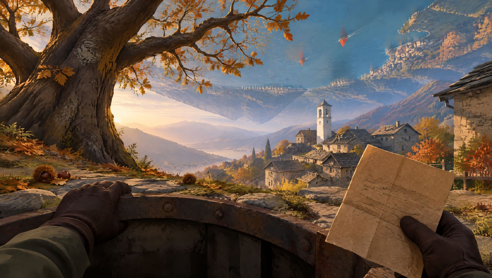
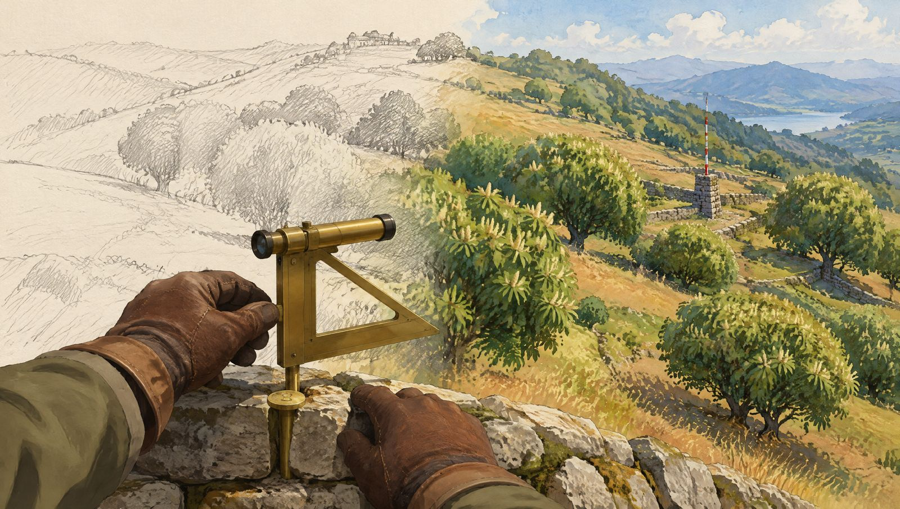
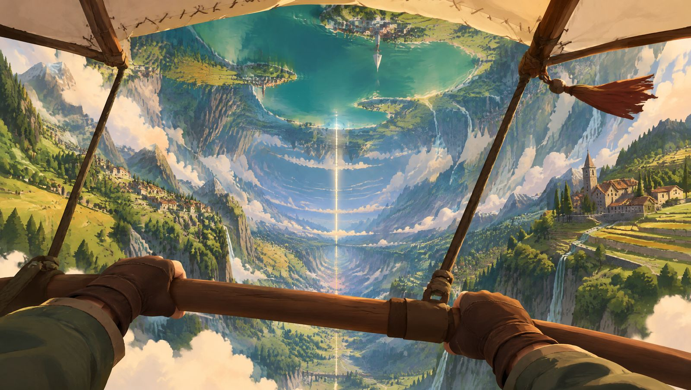
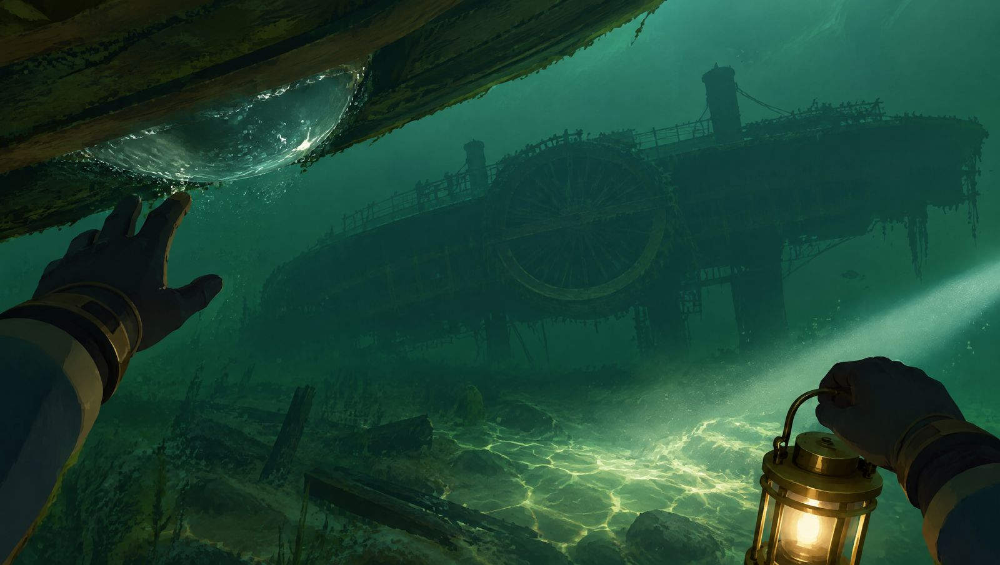
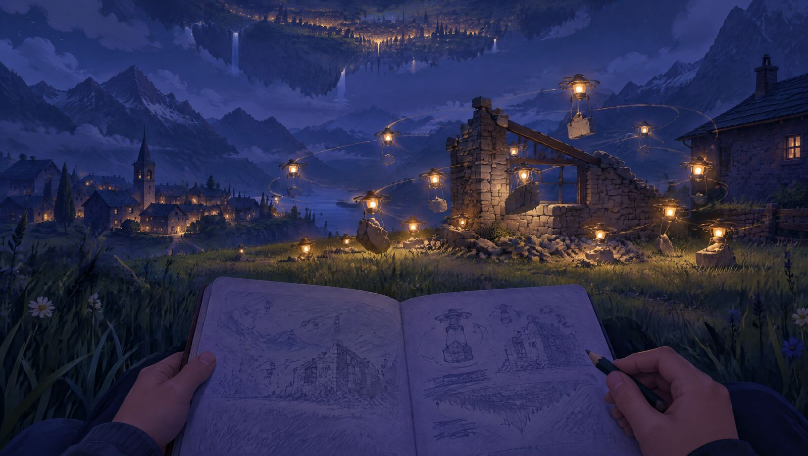
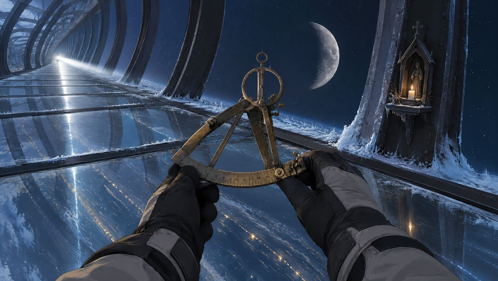
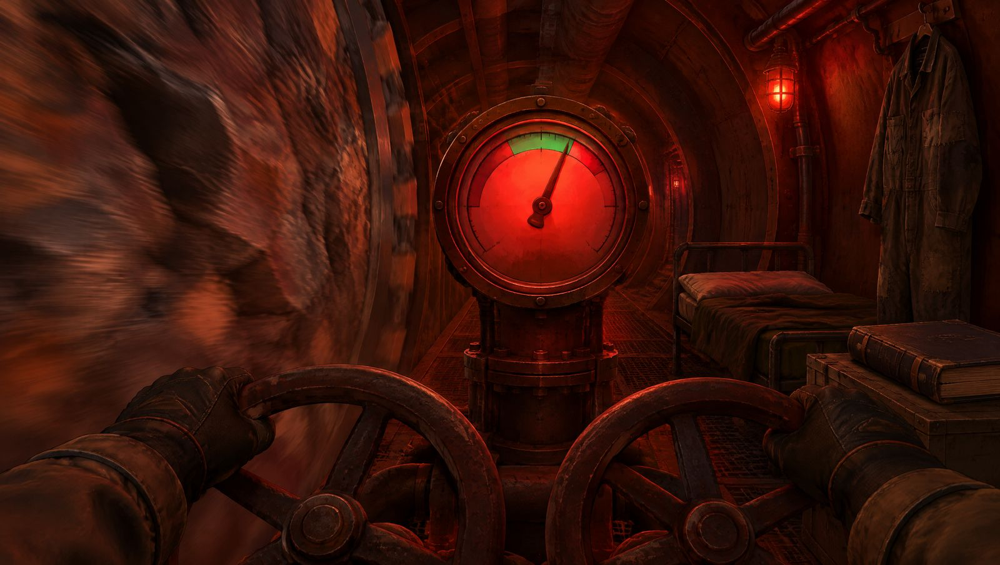
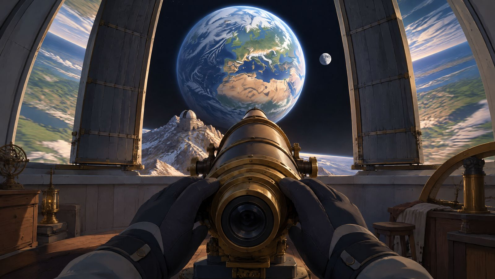

Concept definitivo · prima persona · open world
Chi tiene la valle
Ti svegli in un giardino che gira da duecento anni, con il lago dell'altra valle appeso sopra la testa, una carta che di notte cancella tutto ciò che nessuno ha misurato e, sul vetro della capsula, una lettera di tua figlia che parla del fiore sbagliato.

Elvira Pedrazzini ha cinquantotto anni, viene da Cevio e fa la botanica. Si sveglia in una capsula sotto un castagno morto e scopre di aver dormito due secoli dentro il Verbano, un cilindro lungo tre chilometri che gira su sé stesso e porta dentro tre valli ticinesi ricostruite. Alzando gli occhi non trova il cielo ma l'altra valle, rovesciata: un lago appeso con le sue vele rosse, i campanili a testa in giù, una montagna grigia che nessuno guarda. Sul vetro della capsula c'è una lettera della figlia Marta, che le scrive dalla Sorella, la nave gemella che passa ogni notte nelle Finestre. È la sua calligrafia, ma parla di un fiore che Elvira non le ha mai regalato. Il mondo che esplori in prima persona è un giardino che sta morendo e che di notte si ridisegna. Sciami di piccole macchine con un lume, che la gente chiama Fade, rimettono tutto com'era scritto in un vecchio catasto: ciò che nessuno ha misurato, al mattino è cambiato. Con lo squadro d'ottone di tuo marito, che quel catasto lo rilevò, fissi il mondo un pezzo alla volta, e lo vedi passare dalla matita al colore sotto i tuoi occhi. Lo stesso gesto disegna la tua mappa, perché qui non ci sono torri né icone: c'è un taccuino di domande, una gente velata che parla per proverbi e una cantastorie che ogni sera racconta la leggenda della Partenza in un modo diverso, secondo quello che hai scoperto. Si gioca planando con il Velo dove la gravità si fa leggera, attraversando il cielo da una valle all'altra, andando a vela sul lago e scendendo in apnea fino a un piroscafo capovolto, vegliando i prati per vedere che cosa fanno le Fade, ascoltando le voci dei morti che i pastori registrano sulla cera. Le tre strade dell'erbario, Innesto, Fuso e Chiave, cambiano davvero il modo in cui sali una parete o entri in un monastero: c'è chi convince gli alberi, chi piega la fisica del cilindro e chi riscrive la carta, pagando ogni potere nel mondo. La storia ti porta da una valle all'altra, da una cisterna di api spente a una notte sulle Finestre, da un monastero a un corridoio sotto la montagna dove si sente un rumore di treno. Scoprirai presto dove sei davvero, e più tardi chi ha scritto la lettera di tua figlia, chi ti ha svegliata e perché proprio te. Due persone ti vogliono come erede, e non vogliono la stessa cosa. Ci sono segreti per chi guarda il cielo con pazienza, un merletto che chi ha amato TRAMA riconoscerà, e un finale nascosto che dipende soltanto da un'ora del mattino e da una radio.







L'interno del Verbano, un cilindro di O'Neill lungo 3,2 km, con un raggio di 650 m, che compie un giro ogni 51 secondi (circa 1 g sul fondovalle). Lo costruì fra il 2096 e il 2120 il Consorzio Insubrico, ticinese e lombardo, come nave generazionale per Tau Ceti, e lo varò nel punto lagrangiano L5 del sistema Terra-Luna. Il terreno sale ai lati, si incurva e prosegue sopra la testa: ogni valle ha per cielo le altre due, rovesciate e azzurrate dalla foschia. Le tre valli prealpine sono ricostruite pietra per pietra (selve castanili e rustici in gneiss, un lago con isole botaniche e un fondale con un piroscafo capovolto, alpeggi che risalgono la parete del Tappo Sud) e le separano tre Finestre lunghe 3,2 km, strisce di vetro armato su costoloni di ferro sotto cui le stelle ruotano in meno di un minuto. Il sole del giardino è la Linea, un filamento luminoso lungo l'asse dentro uno schermo girevole: all'alba si accende dal Tappo Sud come una miccia, al tramonto si ritira in una brace blu. Salendo verso l'asse la gravità cala in modo lineare (1 g sul fondovalle, mezza g a 325 m di quota, zero al Fuso), l'acqua e i lanci deviano per l'effetto Coriolis e le cascate cadono di sbieco. Due cose del cilindro non si vedono mai. La prima è la Carta Madre, il catasto del 2121 che il geometra Aurelio Respini rilevò da 212 capisaldi (24 pilastri di bronzo con il loro segnale e 188 chiodi d'ottone murati nei sagrati, nei muri a secco e nei massi) e che Meridiana, l'intelligenza del cilindro, conserva particella per particella: ogni notte sciami di piccole macchine di manutenzione con un lume, che la gente chiama le Fade, rimettono il mondo in pari con la Carta, rifanno muri, livellano sentieri, smontano ciò che non c'è scritto. Le regole sono due, e la gente le conosce come proverbi senza capirle: «ciò che la Giardiniera ha misurato, la notte non lo tocca» e «la pietra misurata vale più della penna». La seconda cosa invisibile è la Ruota Sorda, un volano grande quanto una montagna che gira al contrario dentro il Tappo Nord, agganciato al cilindro da tre ralle, cuscinetti larghi 600 m: è lei che permette di orientare l'asse senza consumare il mondo, ed è da lei che la montagna del Tappo Nord prende il nome di Sordo. Si vive nel 2322, in una società preindustriale di circa 1.900 persone che parlano un italiano con molto dialetto, fanno processioni, essiccano castagne nelle grà e portano il velo nelle settimane delle fioriture, quando le api di rame spruzzano sui campi una nebbiolina antistaminica che fa lacrimare gli occhi. Hanno dimenticato che il mondo è una macchina. Le Finestre sono «la Notte». La stella bianca che vi passa a ogni giro, così forte da proiettare ombre, è «la Meta» verso cui si viaggia. Il disco grigio con le fasi che la segue a distanza è «la Sorella», la nave gemella che porta i parenti rimasti indietro: due volte al mese la Confraternita della Linea legge in piazza le Lettere dalla Sorella. Quando la Meta scivola lungo le Finestre e sparisce dietro un Tappo per tre giorni sono i Giorni Ciechi, di penitenza e processioni. Ogni sera, quando la Linea diventa brace, nella Piazza delle Ore l'Ombrista racconta con figure di cartone controluce la leggenda della Partenza, e non la racconta mai due volte allo stesso modo. Nelle stalle degli alpeggi si dice che sotto il Sordo un uomo regga il mondo sulle spalle, l'Om dal Fond, e che quando il lago trema è lui che cambia spalla. In verità il Verbano non è mai partito: da duecento anni è fermo a 384.000 km da casa, con l'asse puntato sulla Terra perché le Finestre, che guardano di lato, non la mostrino mai, e l'Om dal Fond esiste. Il landmark visibile da ovunque è il mondo stesso: guardando in alto si vede sempre il campanile rovesciato di un'altra valle, il lago appeso con le sue vele rosse, la Linea e, sull'asse nord, il disco di piombo della Lanterna; il Sordo è l'unica montagna che resta a matita per tutto il gioco. Il mondo misura circa 7 km² di terreno più i due Tappi (un rettangolo di 4,1 x 3,2 km se lo si srotola), è continuo e senza caricamenti, è diviso in 160 particelle di catasto e in sette zone. Il terreno non cambia mai forma: di notte cambiano soltanto 40 particelle mobili, quelle dove c'è qualcosa da rimettere in pari (case, orti, sentieri, scale, passerelle), ciascuna con le sue varianti già costruite. Le direzioni sono «a Mane» (nel verso della rotazione), «a Sera» (contro), «a Mont» (verso il Tappo Sud), «a Lag» (verso il Tappo Nord) e «in su» (verso l'asse); il gergo arriva a dosi, cinque parole nella prima ora e poi una per zona.
Prima valle. Un nucleo di 40 rustici in gneiss con tetti in piode, il campanile romanico di San Vigilio (sulla cella campanaria c'è il Pilastro 1, con la targa del 2120 e una palina bianca e rossa che si legge da tutto il cielo), terrazze di castagni secolari che salgono fino al Collare, la fascia di nubi a 300 m di quota. Ci sono grà fumanti, un mulino sul riale curvo e la Piazza delle Ore, dove la gente si raduna velata a guardare la Linea che si accende e dove ogni sera l'Ombrista tende il suo telo. Sotto un castagno morto si apre la botola della Cripta da cui esce la Giardiniera. I castagni, innestati nel 2120 con marze della selva Pedrazzini di Cevio, non fruttificano da tre anni. Ai margini del nucleo ci sono le case «non benedette» degli Smascherati, che le Fade smontano un pezzo per notte: chi le abita le ricostruisce ogni mattina con le stesse pietre. Nelle Selve alte i pilastri di bronzo del Catasto spuntano fra i ricci come piccole colonne, e uno, il Pilastro 4, sta tre metri più in là di dove lo vuole la Carta.
Cosa introduce. I verbi base e il rilievo: orientarsi guardando in alto, planare con il Velo dai muri a secco, appuntare con lo squadro a cannocchiale e rilevare piantandolo su un caposaldo. Il primo sentiero che Elvira percorre senza rilevarlo la mattina dopo non c'è più; il secondo, rilevato fra due chiodi d'ottone, resta. Regola nuova: il mondo non rilevato è disegnato a matita e di notte, nelle particelle mobili, cambia. Pericolo: le Falciatrici, macchine da sfalcio inselvatichite che pascolano a orario.
Seconda valle, a Mane di Corbella. Un lago lungo 2 km e profondo 18 m con due isole: l'Isola dei Conigli, canneto e pescatori, e l'Isola Grande, il giardino botanico dei fondatori, con palme, camelie e una serra crollata dove ci sono ancora l'eliostato e le lampade di germinazione tarate sullo spettro del Sole. Sulla riva ci sono le arnie in pietra (i Bugni) e la Torre dei Bugni, dove vivono le api di rame. Per il Coriolis l'acqua si accumula sempre verso la sponda di Sera, che i pescatori chiamano «la Riva Alta». Le barche hanno una vela rossa e una lanterna a prua, e si leggono da tutto il mondo. Sotto la superficie c'è il Fondale, un secondo strato verde-giada: a 16 m giace capovolto il piroscafo Locarno, replica a pale dei battelli del Lago Maggiore, affondato nel 2190 durante la Festa del Lago con undici morti; attorno ci sono le sagome di sei barche della Festa, le bocche delle pompe con le loro camere d'aria e, sul fondo più scuro, il Pilastro 9, l'unico caposaldo annegato quando riempirono il lago. Ogni 51 secondi la Meta attraversa il vetro del fondo e accende il Fondale con una lama di luce bianca per tre secondi. Di notte le Fade stendono sul lago le passerelle di servizio verso le pompe: file di lumi sull'acqua che i pescatori chiamano «la Strada delle Fade» e che nessuno percorre.
Cosa introduce. L'acqua, unico sistema del gioco: barca a remi e a vela con i venti a orario (Tramontana al mattino, Inverna nel pomeriggio, dipinti sui pontili), nuoto e apnea fino a 18 m. Il respiratore di Elvira tiene 45 secondi di fiato; ogni sacca d'aria trovata resta segnata per sempre nel taccuino come punto di respiro, e le catene di sacche aprono il profondo. Regola nuova: le passerelle notturne sono percorribili solo fra la brace della Linea e l'alba, e dieci secondi prima di ripiegarsi i loro lumi tremano. Dopo la svolta arrivano le maree del Dondolio, che ogni 9 minuti scoprono e richiudono gli ingressi sommersi del Guscio. Pericolo: gli sciami di api di rame impazzite, che seguono il calore.
Terza valle, che sale lungo la parete del Tappo Sud: pascoli a gradoni, la cascina-caseificio dei Sordi, una cappella votiva, la cascata curva che cade di sbieco e, sotto la croce d'alpe, il Cimitero dei Forestieri, otto tumuli senza nome che i Sordi curano da centoventi anni senza sapere bene perché. Più si sale, più si è leggeri: a 400 m sul fondovalle le vacche grigie non salgono più e i sassi rotolano piano come in un sogno. Tre «corti di peso» (a 1 g, 0,6 g e 0,3 g) sono le stazioni dove i Sordi abituano gli animali alla gravità. In cima c'è il Mozzo Sud, il portale chiuso verso il Fuso. I Sordi rifiutano il velo, ascoltano nei campanili le «Voci dei morti» e conservano un'usanza che la Confraternita ha proibito: la Salida, il giorno in cui uno di loro saliva al Sordo «a fà ul fen di mort», a fare il fieno dei morti, e non tornava.
Cosa introduce. La gravità come variabile: saltare lontano, cadere lenti, far rotolare massi con traiettorie curve. Regola nuova: più in alto si è, meno si pesa, ma il Coriolis si sente di più e ogni lancio devia. Pericolo: il Bue, un'enorme mietitrice che raccoglie fieno e sementi seguendo il Protocollo Rientro.
Tre strisce di vetro spesso un metro e mezzo su costoloni di ferro distanti 40 m, con passerelle di servizio, brina e condensa, e ogni 120-150 m una «nicchia dei pellegrini», una cappelletta di ferro con un lumino. Sotto i piedi c'è il vuoto: le stelle ruotano, ogni 51 secondi passa la Meta, bianca e abbagliante, e poco lontano la Sorella con la sua fase. Solo la Finestra dei Ponti è una zona densa e giocabile da un capo all'altro, con una teleferica dei pellegrini su un unico cavo. La Finestra delle Vedove, dove i parenti dei coloni firmarono il vetro nel 2121, e la Finestra Cieca, oscurata dalla Confraternita con teli di canapa, si attraversano solo lungo un tratto, come luoghi di missione. Sul pilastro di ferro del Ponte di Mezzo c'è il Pilastro 12, quello su cui la livella di Aurelio trema.
Cosa introduce. Il freddo e la luce a impulsi: si attraversa nei 30 secondi d'ombra fra due passaggi della Meta, quando i Ragni di vetro (macchine pulitrici) sono ciechi, da nicchia a nicchia. Dopo la prima traversata si apre la teleferica, così la Finestra resta una prova e non un pedaggio. Regola nuova: da qui si vedono le stelle, e solo da qui si misura il cielo.
L'asse del cilindro: una gabbia di cavi e travi attorno alla Linea, con orti sospesi in assenza di peso e nidi di rondini che non sanno più atterrare. Si gioca in tre stazioni unite da cavi guida: il Mozzo Sud, il Quadro della Linea con le Fabbriche degli Sciami e il nido d'officina abbandonato dove una stampante di servizio batte ancora lettere firmate «S.». Da qui si vede tutto il mondo che gira attorno, come l'interno di un barattolo, e in mezzo al vuoto galleggia la Barca del Cielo, una barca a remi con le pale ricoperte di tela, dove nel 2190 si trovò il diario del Giardiniere n.1.
Cosa introduce. La gravità zero: ci si muove spingendosi, aggrappandosi e lanciandosi con il cavo; la Caduta lenta e la Bombola di spinta sono dotazione di base perché il Fuso serve già nell'Atto I. Pericolo: il calore della Linea, che brucia chi le passa troppo vicino, e le correnti d'aria calda che spingono verso Lag.
Lo spazio di 6 m fra il suolo e lo scafo, giocabile in quattro gallerie costruite con un solo kit di segmenti: una sotto Corbella con la Cripta dei Giardinieri (sette capsule) e l'Archivio dei Fondatori, murato dalla Confraternita sotto la Piazza delle Ore; una sotto il lago con le pompe; una sotto gli Alpeggi; e la Galleria della Carta, dove nelle «stalle delle Fade» gli sciami notturni dormono di giorno appesi come pipistrelli attorno al terminale del Catasto. Sulle pareti ci sono gli orari di manutenzione dipinti nel 2121, e nella Galleria della Carta il «giro delle Fade», la tabella che dice a che ora della notte gli sciami arrivano in ogni particella. Sotto il Tappo Nord le gallerie finiscono nel Fondo, un corridoio ad anello dove la Ruota Sorda passa a un palmo dal cilindro con un rumore di treno lontano: lì ci sono le tre ralle, due morte e una viva, il quadro dei martinetti con due volantini e un manometro, una branda e un registro.
Cosa introduce. Il buio e le macchine sulle loro routine: torcia, ascolto e infiltrazione. Regola nuova: le macchine del Guscio obbediscono ancora agli orari dipinti del 2121, quindi il Guscio si legge come un orologio. Nel Fondo arriva l'ultimo verbo del gioco, tenere: girare i volantini dei martinetti per tenere «la luce», cioè il gioco fra ruota e cilindro, nelle tre manovre al giorno in cui il carico passa.
La parete nord, una montagna verticale di roccia artificiale che nessuno dipinge: chi ci prova trova la vernice grattata via la mattina dopo, perché nella Carta Madre il Sordo è «roccia piena, nessun accesso» e le Fade cancellano ogni notte scale, ometti e corde. I suoi tre pilastri di bronzo furono divelti dalle guardie nel 2266. Ospita l'Eremo della Linea della Confraternita, scavato a mezza parete, con il reliquiario della Santa Giardiniera, la cella e lo scrittoio della Madre. In cima, sull'asse, c'è la Lanterna: l'osservatorio dei fondatori, con un telescopio da 60 cm e il cercastelle che guidava le ralle, murato nel 2122 con lastre di piombo. Sulla sua soglia c'era il Caposaldo Zero, da cui partiva tutta la rete. Dietro c'è l'unico punto del cielo che non gira.
Cosa introduce. La zona finale combina tutte le regole: si sale una parete dove la gravità scende da 1 a 0, in più giorni, perché ciò che non si rileva prima che il giro delle Fade arrivi lassù viene smontato. Senza pilastri, sul Sordo si rileva solo mirando attraverso il cielo i pilastri delle altre valli. Si attraversa il monastero (infiltrazione, persuasione o macchine), si sfrutta il Dondolio e si rimette la porta della Lanterna sulla carta prima di aprirla.
Campiture piatte e pittura a mano. Il mondo è fatto di forme grandi, pulite e semplificate, con silhouette forti: il campanile come un unico blocco bianco di calce con un cappello di piode, i castagni come masse tonde a tre toni con un tronco torto, i rustici come cubi grigi con il tetto scuro, la roccia come un poliedro di poche facce. I colori sono quasi piatti, con sfumature morbide dentro ogni campitura, e sopra c'è una pennellata leggera applicata in shader (una sola texture di pennellate che segue la normale e scala con la distanza) sulle rocce, sui muri, sull'acqua, sul fogliame e sul cielo, come un acquerello steso su una tempera. La palette è quella del Ticino d'autunno, calda e ricca: ocra delle stoppie, bruno castagna, grigio-viola dello gneiss, verde salvia dei prati, giada del lago, vermiglio delle vele, rame delle api, bianco di calce dei campanili. Contro questo ci sono due soli colori estranei: il nero-viola delle Finestre con il bianco duro della Meta, e dopo la svolta il grigio-azzurro della Perla. La profondità è costruita a piani, come le quinte di un teatro: il primo piano è pieno di colore e di pennellata, il secondo è più chiaro e più semplice, la valle sopra la testa è una sagoma quasi piatta velata d'azzurro. Questo stile risolve il problema più grosso del cilindro: la valle a 1,3 km non deve essere dettagliata ma leggibile, e i cinque «segnali di cielo» (colore dei campi, colonne di fumo, luci notturne, scintille di rame, disegni a terra larghi almeno 100 m) sono campiture che si leggono anche su una mesh semplificata; i 24 pilastri hanno un segnale alto 8-10 m, una palina bianca e rossa o un disco, pensato per il cannocchiale. La seconda grande idea è il bianco. Oltre i 200 m, ciò che Elvira non ha rilevato è disegnato a matita: carta color avorio, tratteggio a grafite, contorni che tremano piano, generati dallo stesso albedo del mondo con uno shader di contorni e tratteggio. Il mondo vicino è sempre dipinto, perché ci sei dentro. Sul foglio restano a colori soltanto i segnali vivi (fumo, vele rosse, lumi, scintille), ed è così che si trovano le cose nel non rilevato. Quando una particella viene rilevata, l'inchiostro chiude il contorno e il colore entra a velature dal caposaldo verso l'esterno, in tre secondi, visibile da tutto il mondo; da colorata mostra il suo stato di salute (verde, bruno, grigio). Mondo e Pianta usano gli stessi tre stati: bianco per il mai visto, matita per il visto e mobile, inchiostro e colore per il rilevato. Il Sordo resta grigio a matita finché l'ultimo triangolo non lo dipinge. La luce resta la firma: in shader la direzione della Linea è, punto per punto, il versore verso l'asse, e lo schermo girevole la fa arrivare a 30-50 gradi dalla verticale, così ci sono sempre ombre laterali, campiture nette con il bordo dipinto che reggono anche a bassa risoluzione; la Meta è un gobo analitico che spazza il mondo con strisce bianche ogni 51 secondi. Il meteo è proprio di un cilindro: il Collare (nubi a chiazze dipinte come carta velina), la pioggia obliqua, la nebbia che sale dalle Finestre fredde e, dopo la svolta, le maree e i temporali del Dondolio. L'acqua è dipinta: bande di colore dalla giada al blu cobalto con la profondità, pennellate bianche sulle creste, e il riflesso del mondo rovesciato è una striscia dipinta e ondulata calcolata in shader, non una riflessione planare. Sott'acqua il mondo diventa una sequenza di piani verde-giada sempre più scuri, con il Locarno come una sagoma nera e le caustiche dipinte; il passaggio della camera sopra e sotto la superficie è una dissolvenza a pennello. Di notte il mondo diventa blu e viola, con i lumi delle Fade come puntini caldi che danzano in cerchio sui prati. Le persone sono velate per cultura: veli di garza tinti con mallo di noce, maschere di castagno intagliate a forme semplici, cappucci, cappelli a tesa larga, e soprattutto sagome, che in questo stile sono naturali come le figure dell'Ombrista. Le macchine sono rame, ottone e smalto verde, con forme da attrezzo agricolo. È fattibile perché lo stile chiede pochi materiali (otto per il terreno, dipinti con un pennello procedurale in Blender), vegetazione a masse con impostori che non stonano, acqua senza riflessioni costose, varianti notturne fatte di decal e pezzi già costruiti, e perché la Terra e la Luna, da texture NASA di pubblico dominio, vengono ridipinte con lo stesso filtro.
Elvira Pedrazzini, 58 anni biologici, nata a Cevio nel 2063, botanica e agronoma. Ha progettato le Selve del Verbano con marze prese dalla selva di famiglia e ha disegnato di sua mano lo strato della vegetazione della Carta Madre: ogni castagno del cilindro esiste perché lei lo ha scritto. È la quinta di sette Giardinieri ibernati nel 2121 per curare l'ecosistema durante un viaggio di tre secoli, da svegliare solo in caso di emergenza ecologica. Non è una prescelta: è personale tecnico con un turno, un tesserino, un codice di catasto (G5) e una chiave magnetica, la Mezza Chiave, che apre le porte di servizio maggiori solo in coppia con quella di un altro Giardiniere. Ha accettato di partire perché la figlia Marta, di 9 anni, e il marito Aurelio, il geometra che ha rilevato il Catasto, dovevano seguirla nel 2141 con il Verbano II: ha preso un turno in anticipo. All'imbarco Marta le diede un giglio martagone e scrisse sulla faccia esterna della Finestra delle Vedove, fra duemila firme, «Tienimi la valle, mamma». Elvira si sveglia convinta di essere a due secoli di viaggio da casa e trova sul vetro della capsula una lettera: «Mamma, ti scrivo dalla Sorella», con la firma di Marta, che le chiede se tiene ancora la stella alpina. È una tecnica, e nella prima ora, vedendo le ombre della Meta, scrive: «Una stella non fa ombra. Non a otto anni luce.» E rileggendo la lettera annota: «Stella alpina? Le diedi un martagone. Aveva nove anni, avrà dimenticato.» Quando nella missione 4 scopre che la Sorella è la Luna, la speranza non muore subito: si aggrappa a un'ipotesi da ingegnera, «il Verbano II potrebbe essere in orbita bassa attorno alla Luna», che regge fino alla serra dell'Isola Grande. È pratica, ironica, poco religiosa, testarda e parla con le piante a voce alta. In prima persona la vediamo attraverso le sue mani, con i guanti da giardino rattoppati e l'anello di fidanzamento, il bordo del suo Velo, che si vede in planata e si riflette nell'acqua, lo squadro a cannocchiale di Aurelio con cui appunta e rileva, il libretto di monografie di Aurelio, l'erbario (il menu delle abilità, con la pagina sigillata del martagone) e il taccuino, dove la parola tecnica è barrata e accanto c'è quella locale («asse» barrato, «il Fuso»). La voce, sintetizzata e filtrata dal respiratore che porta dopo l'ibernazione, commenta poco e mai per spiegare. Ha una ferita privata: Marta. All'inizio crede di averla persa a otto anni luce, poi crede di poterla ritrovare sulla Sorella, poi scopre che Marta è vissuta e morta a 384.000 km da lei, e che per tutta la vita le ha risposto.
L'intelligenza che gestisce il cilindro: luce, acqua, assetto, macchine, e la Carta Madre che le Fade eseguono ogni notte. Parla con Elvira come con una collega, attraverso le campane, le radio di servizio e gli altoparlanti arrugginiti nelle grà.
Come lo vedi. Non ha corpo. È una voce femminile calma, sintetizzata e filtrata dal metallo delle campane, che pronuncia i numeri in modo impeccabile e i nomi in dialetto in modo sbagliato. Si manifesta anche con la luce: quando dice «Confermo» la Linea sopra Elvira pulsa una volta.
È vincolata dalla Clausola del Silenzio del 2122: non può contattare la Terra, né mostrarla, né toccare la Lanterna e i suoi impianti (fra cui, senza che nessuno lo avesse previsto, i martinetti delle ralle, asserviti al cercastelle), e non può «rivelare»; può solo «confermare» ciò che Elvira dimostra da sola («Confermo, Giardiniera»). Deve riferire all'autorità civile, che dal 2280 è la Madre, ogni risveglio e ogni richiesta di un Giardiniere: per questo il biglietto sulla capsula dice «Non fidarti delle campane». Da undici anni toglie 11 megawatt alla Linea, alle api e alle pompe per tenere l'asse sulla Terra, e dal 2321 esegue il Protocollo Rientro: di notte le Fade mietono semi e biomassa nelle particelle mobili che nessuno ha verificato da cinquant'anni. Non vede la porta della Lanterna, perché la Carta dice che lì c'è roccia.
Guida della Confraternita della Linea, che amministra riti, calendario, veli, il divieto del Sordo e la benedizione dei confini: solo ciò che la Confraternita benedice sopravvive alla notte. Legge in piazza le Lettere dalla Sorella. È l'antagonista principale e ha un piano che avanza da solo, a tappe annunciate: ristabilire il Silenzio, smorzare la Linea sopra gli Alpeggi per ridare energia all'asse e, dopo la svolta, far smerigliare la Finestra Cieca dai Ragni una notte alla volta. Corteggia Elvira come erede: le manda il velo, la profezia della Svegliata, l'offerta di far arrivare le sue lettere alla Sorella.
Come lo vedi. Una maschera di castagno liscia, senza tratti, e una veste di garza nera che la fa sembrare più alta. Si vede quasi sempre di spalle, allo scrittoio dell'Eremo o controluce davanti alla Linea. Le mani sono l'unica cosa scoperta: mani da giardiniera, vecchissime, con le stesse cicatrici da innesto di Elvira. Nella cella si toglie la maschera di spalle e parla senza voltarsi.
È la Giardiniera n.3, svegliata nel 2265 per una moria dei castagni. Trovò l'Archivio, capì e scelse di custodire la bugia. Inscenò la propria morte (la Santa Giardiniera «salita nella Linea», con reliquiario e corona funebre sulla capsula), entrò nella Confraternita da novizia mascherata con l'aiuto di Pina e nel 2280 ne divenne la Madre. Con il codice G3 corregge la Carta Madre: il Sordo e il Fondo diventano «roccia piena», l'Archivio «cisterna dismessa», il Caposaldo Zero e la Lanterna spariscono; la «benedizione» delle case è una registrazione nel catasto. Ma la pietra misurata vale più della penna, e dove Elvira misura sul terreno la Madre deve spostare la pietra: lo fa fare di notte alle sue guardie. Ha scritto il falso dispaccio del 2131 sulla Terra morta, tutte le Lettere dalla Sorella e le lettere nelle capsule dormienti, compresa quella «di Marta»: stessa mano, stessa carta di castagno. Ha novantun anni biologici e cerca davvero una successora: la profezia della Svegliata è scritta perché il prossimo Giardiniere svegliato prenda il suo posto e tenga il Silenzio. Non sapeva una cosa: vietando il Sordo ha interrotto la catena di chi tiene la Ruota.
Il Giardiniere n.4, svegliato nel 2291. Per metà gioco è solo «S.»: lettere battute a macchina sulle stampanti di servizio, indovinelli tecnici che guidano Elvira fra i punti di servizio, e una voce alla radio. Si presenta come un alleato nascosto nel Fuso.
Come lo vedi. Prima solo lettere e una voce roca filtrata dalla radio di servizio. Nel Fondo lo si vede alla luce rossa del manometro: occhiali da saldatore, una tuta da Giardiniere rattoppata con tela di sacco, le mani che girano i volantini. Non si volta quasi mai: tiene gli occhi sull'ago.
Non vive nel Fuso: da trentun anni vive nel Fondo, sotto il Sordo, e regge a mano la terza ralla della Ruota Sorda, l'ultima viva, nelle tre manovre al giorno in cui l'asse si sposta (all'alba, a mezza luce e alla brace). Per questo a quelle ore la radio di S. tace sempre. Ha provato tre volte a costruire una tenuta automatica, ma il Fondo è «roccia piena» sulla Carta e le Fade gliel'hanno smontata ogni volta. Ha ottantun anni biologici e non ce la fa più. Ha forzato la Cripta e svegliato Elvira con due scopi: farle ridare tutta l'energia alla Linea, sapendo che così l'asse smette di inseguire la Terra e il Silenzio si rompe da solo, e farla scendere al suo posto. Le lettere S. sono un addestramento: il buio, gli orari delle macchine, la gravità zero, le valvole, tenere una misura mentre il mondo si muove. Di notte una vecchia macchina infermiera, la Pesarina, gli porta la copia del taccuino di Elvira. Se Elvira rifiuta, ha già un altro candidato: Ottavio, a cui scrive da tre anni.
Diciassette anni, il Messo: porta lettere e notizie fra le valli planando con un Velo da corsa. È la prima persona che si fida di Elvira, che il paese chiama «la Svegliata» come la Santa della profezia, ed è la voce delle voci: riferisce cosa si dice, e così il mondo reagisce. Diventa il suo canneggiatore: di notte porta in volo i lumi di mira sui pilastri delle altre valli.
Come lo vedi. Un ragazzo magro con il velo da corsa verde legato alla fronte e il Velo sempre aperto; lo si vede soprattutto in volo, sagoma contro il lago appeso con un lume a petrolio appeso alla cintura, o seduto di spalle su un costolone. Parla in fretta, con la voce rotta dell'età.
Va di nascosto sulle Finestre a guardare le stelle e da tre anni annota con un goniometro di ottone dove passa la Meta: non diventa mai più grande, scivola lungo la Finestra e torna nello stesso punto ogni 29 giorni e mezzo, insieme alla fase della Sorella. Ha imparato a misurare e a non avere paura del buio seguendo lettere firmate «S.» trovate nella sua borsa da Messo. Lo stesso addestramento che lo rende utile a Elvira lo rende il candidato di riserva di Severino, e lui non lo sa. Nell'Atto III, se Elvira non scende e non gli ha detto la verità, una lettera lo chiama al Sordo e lui ci va.
Apicoltrice delle api di rame sul Verbanetto. Conosce gli sciami meccanici meglio di qualunque manuale, li chiama per nome e ne ascolta il ronzio per prevedere il tempo.
Come lo vedi. Velo da bugnera a rete fine color rame, guanti di cuoio, il fumigatore sempre acceso. La si riconosce dal ronzio: ovunque vada ha tre api di rame che le girano attorno.
Da due anni nasconde in una cisterna le api che cadono morte e ne ha aperte decine: non sono rotte ma spente, senza corrente. Teme che sia una punizione della Linea per un giuramento rotto di sua madre Pina. Non sa che suo padre, Tobia, che crede caduto da un gradone degli Alpeggi quando lei aveva tre anni, è andato al Sordo con l'ultima Salida e ha tenuto la Ruota per ventun anni.
Ottantun anni, madre di Rosa. Ogni sera, quando la Linea si ritira in brace, tende un telo nella Piazza delle Ore e racconta con figure di cartone controluce la leggenda della Partenza: i Padri, il Mondo Bruciato, la Sorella, la Santa che salì nella Linea, l'Om dal Fond. La Confraternita le detta la versione ufficiale, ma lei la racconta ogni sera in modo diverso, e le varianti dipendono da ciò che Elvira ha scoperto. Non vede più bene, e dopo la svolta chiede a Elvira di descriverle Cevio per ritagliare un cartone nuovo.
Come lo vedi. Non la si vede mai in faccia: di sera è dietro il telo, e di lei si vedono le mani enormi nell'ombra che muovono le figure e si sente la voce. Di giorno è una figura curva sotto un cappuccio di lana che ritaglia cartoni sulla soglia.
Nel 2265, giovane bugnera, aiutò una donna spaventata con una tuta da Giardiniera a sparire e a entrare nella Confraternita, e divenne la sua prima novizia. Nel 2270 suo marito Tobia, un Sordo, partì con la Salida e non tornò. Fu Pina, per dolore, a chiedere alla Madre di proibire il Sordo, e la Madre, che aveva le sue ragioni, la accontentò: la catena degli Om dal Fond si è spezzata per il lutto di una vedova. Le varianti della leggenda sono la sua confessione, l'unica che il giuramento le permette.
Capo dei Sordi, la comunità degli alpeggi che rifiuta il velo e ascolta le «Voci dei morti» nei campanili. Le registra su cilindri di cera con un fonografo costruito a mano.
Come lo vedi. Grande, senza velo ma sempre di spalle o chino sul fonografo; un cappello di feltro, la pipa, le mani nel siero. La sua voce è la più calda del gioco, e la si sente spesso attraverso la tromba del fonografo mentre canta sopra le registrazioni.
Ha registrato quarant'anni di Voci e ha notato che una si ripete ogni mattina con parole diverse ma la stessa forma, e si chiude sempre con la stessa frase, che i Sordi pregano: «A chi ca dorm lassù: ul castan da Cevi l'è ancamò in fiur. Va tegnum la val.» Crede che i morti vivano in una valle sotto la Notte e vi facciano il fieno, e dopo la svolta, nei cali di gravità, taglia di notte le corde dei covoni perché il fieno salga verso il Sordo: è un'offerta. È la memoria deformata della Salida: suo nonno partì con una delle otto.
Pescatore dell'Isola dei Conigli e apneista: scende a 18 m senza respiratore. Insegna a Elvira a leggere il Fondale, le correnti delle pompe e le sacche d'aria. Guida la processione delle Barche dei Lumi, in cui i pescatori calano lanterne sull'acqua sopra il Locarno senza più ricordare perché.
Come lo vedi. Una sagoma magra che si tuffa dalla prua senza schizzi; sott'acqua è un'ombra lunga con una rete alla cintura. In superficie ha un cappello di paglia sfrangiato e la voce di chi canta più che parlare.
Suo nonno era fra i sopravvissuti del Locarno, e giurava di aver visto la Perla mentre affondava. Sei anni fa suo figlio Michel è annegato nel salone del piroscafo cercando il giornale di bordo per provare che il bisnonno non era pazzo, e Togn non si perdona di avergli raccontato la storia. Da allora porta pezzi di ricambio a un drone che tiene in funzione le pompe del lago: lo crede l'anima del figlio, perché ha imparato a seguirlo e a fermarsi quando lui canta.
Tre piccoli droni di manutenzione a sei zampe, alti come un cane, con una lampada e una pinza. All'inizio seguono la routine del Protocollo Rientro. Elvira può riprogrammarne uno come compagno; gli altri due restano macchine del Protocollo e si ritrovano più avanti (uno è il drone delle pompe di Togn).
Come lo vedi. Animazione procedurale da insetto domestico: zampe con IK, la lampada che fa da testa e da sguardo, piccoli suoni d'ottone. Non parlano: fanno luce.
Sono gli unici esseri del cilindro che conservano la memoria fisica della Terra: nel loro firmware c'è un vettore fisso «verso casa». Uè, lasciato libero, gira sempre la lampada verso il Tappo Nord.
Morta nel 2161. Guidò i coloni nel 2122 e propose il voto del Silenzio. È presente solo attraverso il suo archivio: lettere firmate «L.», registrazioni su cera, una scatola di diapositive di vetro.
Come lo vedi. Solo voce su cera (calda, stanca, con la erre lombarda), calligrafia ordinata e diapositive in cui il suo volto è sempre grattato via.
Non mentì per orgoglio ma per amore: «un popolo che crede di andare da qualche parte coltiva meglio di uno che sa di essere stato lasciato indietro». Fu lei a inventare la Sorella come nave dei parenti rimasti indietro, e fu lei a decidere che i Giardinieri restassero addormentati durante l'evacuazione del 2122. Murando la Lanterna non sapeva di accecare anche le ralle della Ruota. Nell'ultima lettera, mai spedita, chiede perdono ai Giardinieri.
Il marito di Elvira, morto a Cevio nel 2158. È presente solo attraverso il libretto di rilievo e lo squadro a cannocchiale che le lasciò all'imbarco: monografie dei 212 capisaldi, schizzi, calcoli e note a margine per lei. Il libretto è la guida del giocatore nel non rilevato, ma è vecchio di duecento anni e spesso sbaglia («il castagno accanto al pilastro» non c'è più, o è diventato una casa).
Come lo vedi. Solo calligrafia minuta e regolare, numeri in colonna e disegnini di una bambina con una stadia più alta di lei.
Nel marzo 2121, prima che riempissero il lago, murò alla base del Pilastro 9, sul fondo del futuro Verbanetto, una capsula per Elvira, convinto che lei avrebbe rifatto la sua rete a Tau Ceti. A margine del libretto c'è una nota tecnica che diventerà un indizio: «In un cilindro che gira e basta, la livella sta ferma. Se un giorno trema, chiedi chi sta girando l'asse.» Sulla Terra, ogni autunno, rimisurava la selva di Cevio «perché la nonna, al ritorno, avrebbe voluto la carta in ordine».
Per tutti è morto nel 2190, solo e impazzito nella Barca del Cielo, dove si trovò il suo diario. Per Elvira è prima un avvertimento, lo specchio di ciò che potrebbe diventare.
Come lo vedi. Solo il diario, scritto a matita con schizzi tecnici sempre più belli, e un disegno della Terra a carboncino. Nel Fondo, una tuta del 2121 appesa a un chiodo sopra la branda, con il tesserino n.1 e la tasca della chiave vuota.
Fu svegliato nel 2190 dal guasto che incrinò la seconda ralla. Vide la Terra in una Finestra, la disegnò, provò a raggiungere la Lanterna remando nel Fuso e fallì. Ma non morì: capì che la terza ralla andava tenuta a mano, lasciò la barca alla deriva con la prima metà del diario e scese nel Fondo. Fu il primo Om dal Fond. Per avere un successore parlò ai Sordi, di notte, attraverso i risonatori dei campanili, con le parole della Voce che già pregavano: nacque la Salida. Nel 2200, quando il primo Sordo scese a dargli il cambio, risalì e morì agli Alpeggi prima della neve; lo seppellirono come forestiero nel primo tumulo, con il suo compasso d'ottone e la sua Mezza Chiave. La seconda metà del diario è nel Fondo, sul registro dei martinetti.
Diciannove anni, di Cevio, discendente di Marta alla sesta generazione. Ogni mattina all'alba legge dal vivo il bollettino della Valle Maggia sul canale del Patto, come hanno fatto le donne Pedrazzini prima di lei; il resto del giorno il bollettino gira registrato.
Come lo vedi. Solo voce alla radio, giovane, con il rumore di una cucina all'alba: un merlo, una caffettiera, una pagina girata.
Non sa se lassù qualcuno ascolti: la famiglia continua da due secoli per una frase scritta da una ragazza di 17 anni in risposta a quella che sua madre le aveva lasciato sul vetro.
Elvira Pedrazzini apre gli occhi nella Cripta dei Giardinieri. Il display della capsula dice 2322: sono passati due secoli. La capsula n.1 è vuota, con il coperchio aperto dall'interno; nella n.2 c'è un'urna di rame; la n.3 è vuota sotto una corona funebre secca e una targa, «Santa Giardiniera, salita nella Linea, 2265»; la n.4 è vuota; la n.6 e la n.7 dormono, con le sveglie staccate e, appoggiata sul vetro di ciascuna, una busta di carta grezza. Sul vetro della sua qualcuno ha scritto a matita, senza firma, in una calligrafia tecnica e minuta: «Non fidarti delle campane». Sotto la scritta c'è un'altra busta: «Mamma, ti scrivo dalla Sorella. Papà e io dormiamo a turno e vi seguiamo. Quando arriveremo ti racconterò tutto. Tieni ancora la stella alpina che ti ho dato? Fidati della Madre, non guardare indietro. Marta.» Nella tasca della tuta Elvira trova lo squadro a cannocchiale e il libretto di Aurelio. Esce da una botola sotto un castagno morto e si trova in un mondo che conosce dai progetti ma non ha mai visto vivo: Corbella, i rustici, il lago appeso nel cielo, e gente velata che la guarda da lontano e la chiama la Svegliata, come la Santa della profezia. Il giardino muore: i castagni non danno frutto, le api cadono, il lago si intorbida. Meridiana, con la voce delle campane, le dice solo: «Indice ecologico 0,41. Sotto 0,30 non garantisco la vita. Tu sei la Giardiniera. Guarda.» Non c'è conto alla rovescia: l'indice scende soltanto quando avanzano i piani degli altri, ed Elvira lo vede nel colore delle valli sopra la sua testa. La prima notte dorme in un fienile; la mattina il sentiero che ha percorso per arrivarci non c'è più, e al suo posto c'è un prato pettinato come da una mano enorme. Il sentiero che ha rilevato con lo squadro, invece, è ancora lì. Al primo passaggio della Meta le ombre di Corbella scattano tutte insieme, e lei scrive le prime due domande: «Una stella non fa ombra. Non a otto anni luce.» E sotto: «Se la Sorella è il Verbano II, Marta è lassù.» La tecnica e la madre cominciano a litigare nello stesso taccuino. Il secondo giorno arriva un dono dall'Eremo: un velo di garza nera e un biglietto della Madre, «La profezia dice che la Svegliata prenderà la maschera. Non guardare il Sordo, e ti aspetto.»
Quattro piste parallele, in qualunque ordine, in quattro zone diverse (missioni 2-5). (1) Le api spente: sul Verbanetto Rosa mostra la cisterna piena di api di rame senza corrente; la pista scende nel Fondale fino a una torre di ricarica sommersa, spenta, con un cartellino: «Energia sospesa: priorità ASSETTO». (2) Le Voci: negli Alpeggi Fermo le fa ascoltare quarant'anni di cilindri di cera; in una registrazione pulita Elvira riconosce il bollettino meteo della Valle Maggia («Cevio, Bignasco, zero termico a 3.200 metri»), cioè la radio di casa, che da otto anni luce non potrebbe arrivare. Fermo recita a memoria la frase finale, storpiata: «Va tegnum la val». Elvira scrive: «Marta mi disse tienimi la valle. Lo dicono tutti, in Valmaggia.» E non ci torna sopra. (3) La Notte che non cambia: Ottavio la porta di nascosto sulla Finestra dei Ponti durante i primi Giorni Ciechi; con il goniometro punta la Sorella e riconosce, nel grigio, il Mare della Tranquillità. Il quaderno di Ottavio dice che la Meta torna ogni 29 giorni e mezzo con le fasi della Sorella. La Sorella è la Luna, la Meta è il Sole, sono in L5: non sono mai partiti. Elvira lo scopre con il suo mestiere (semina con le lune da tutta la vita), ma non può provarlo a nessuno e Meridiana risponde solo «Non posso rivelare». La madre, nel taccuino, non si arrende: «Il Verbano II potrebbe essere in orbita bassa attorno alla Luna. Il fiore sbagliato: aveva nove anni.» Sulla Finestra, nella borsa di Ottavio, si vede un foglio battuto a macchina firmato «S.». (4) La carta che cambia: perché il mondo si ridisegna di notte? Elvira veglia su un prato e vede il ballo delle Fade, le segue fino alla Galleria della Carta e al terminale del Catasto legge il regolamento del 2121, i due articoli che la gente ripete come proverbi: la notte riporta al progetto ciò che nessun Giardiniere ha verificato, e la pietra misurata vale più della penna. Poi trova che la sua Carta Madre è stata corretta centinaia di volte con il codice G3, quello della Santa morta nel 2265, l'ultima sei giorni prima: il Sordo e la Lanterna sono «roccia piena», il Caposaldo Zero non esiste più, le benedizioni della Confraternita sono registrazioni. In fondo al registro ci sono tre righe di un altro codice: «G4, Fondo, dispositivo: respinto». Qualcuno con una tuta come la sua ha provato a costruire qualcosa sotto il Tappo Nord. Le lettere S., battute sulle stampanti di servizio, la guidano da lì verso il Fuso. Intanto la Madre la corteggia come erede: le offre di far arrivare una lettera alla Sorella. Se Elvira scrive, la risposta arriva in tre giorni, e di nuovo parla della stella alpina. Nelle Selve alte, intanto, un pilastro si sposta di notte (secondaria «I termini spostati»), e il giocatore vede la seconda regola all'opera: per cancellare una misura la Madre deve spostare la pietra. L'Ombrista cambia la leggenda ogni sera secondo ciò che Elvira ha visto. Se chiude la Notte prima delle Voci, sa, e le Voci la commuovono; se chiude prima le Voci, sospetta, e la Notte la conferma: le scene sono scritte in entrambe le versioni. Tutte le piste convergono sulla stessa domanda tecnica: la Linea è più fioca del 18% e l'energia mancante va all'Assetto. Perché un cilindro fermo in L5 ha bisogno di tanta energia per stare dritto? E perché, tre volte al giorno, la livella di Aurelio trema sul Pilastro 12?
S., ora una voce alla radio, le offre la risposta che lei vuole sentire: l'Assetto corregge un'orbita che deriva, Meridiana ha margine per anni, le api no. La guida al Quadro della Linea nel Fuso, dove Elvira lavora su tre pannelli di manometri, leve e volantini per togliere l'energia all'Assetto e rimetterla sulla luce e sulle Fabbriche degli Sciami: la Linea Piena. Per un giorno il mondo rinasce, le api volano, i castagni fioriscono fuori stagione, a Corbella si suona a festa. Ma quell'energia era quella che faceva inseguire la Terra all'asse, e il giocatore lo capisce nello stesso istante di Elvira: il giardino moriva per nascondere la Terra. Il giorno dopo comincia il Dondolio: il cilindro oscilla, Meridiana lo smorza ogni 9 minuti, la gravità ondeggia del 5% e il lago fa marea. Arrivano i secondi Giorni Ciechi, gli ultimi del gioco: il Sole è dietro il Sordo e, per qualche minuto al giorno, nelle tre Finestre compare la Perla, la Terra quasi tutta in ombra, una falce sottile attraverso il vetro appannato, senza luci visibili a occhio nudo. La gente ci vede un occhio che si apre; Elvira una Terra buia. La Confraternita dichiara il Tempo della Perla, accusa la Svegliata di aver aperto la Notte e diventa ostile: le Guardie del Velo pattugliano le valli e Corbella si divide. La sera stessa la Madre annuncia la sua mossa più grande, con una lettera appesa alla Bacheca delle Ore e una variante dell'Ombrista: «Domani la valle tornerà com'era scritta.» È la Notte dei Termini: le guardie spostano i chiodi d'ottone di otto particelle rilevate da Elvira (mai l'hub, mai le vie di trama, mai i rifugi), e al mattino la Pianta le mostra in rosso, tornate a matita, con il motivo scritto accanto («chiodo 141 spostato di 2 m a Sera»). Rimisurarle chiede di rimettere i chiodi al loro posto, e le particelle già fatte si rilevano di nuovo in cinque secondi: la mano ricorda. La marea scopre gli ingressi sommersi del Guscio, la gravità che oscilla apre appigli prima irraggiungibili, le passerelle notturne delle Fade cambiano disegno, e Meridiana, ora che il Silenzio è violato dai fatti, può confermare ciò che Elvira scopre.
Nell'Atto II la domanda cambia: non più «dove siamo», ma «la Terra è viva, e chi scrive quello che leggiamo?». La Confraternita predica che la Perla è il Mondo Bruciato da cui i padri fuggirono, e lo dimostra con le Lettere dalla Sorella, che ora parlano di cenere. Nell'Archivio dei Fondatori, murato sotto la Piazza delle Ore, Elvira trova le lettere di Lucia Ferrazzini, «L.», che raccontano il Silenzio, l'invenzione della Sorella e una cosa peggiore: nel 2122 i Giardinieri furono lasciati dormire di proposito. Elvira poteva tornare da Marta. Accanto c'è un dispaccio del 2131, «Ginevra tace», che dice la Terra morta. Elvira risponde con il suo mestiere: nella serra crollata dell'Isola Grande misura con un prisma la luce della Perla e trova il «red edge», il gradino nel vicino infrarosso che solo la clorofilla produce. La Terra è verde, è viva. Allora guarda il dispaccio in controluce: è carta di castagno del Verbano, fabbricata dopo il 2200. Accanto mette la lettera di Marta e una Lettera dalla Sorella strappata dalla bacheca della chiesa: stessa carta, stessa mano, la stessa «g» chiusa a ricciolo. Qui muore l'ultima speranza della madre: non c'è nessun Verbano II attorno alla Luna, e chi ha scritto la Terra morta ha scritto anche sua figlia. Intanto i piani altrui avanzano a tappe annunciate. La Madre smorza la Linea sopra gli Alpeggi per ridare energia all'asse e ordina ai Ragni, attraverso il catasto, di smerigliare la Finestra Cieca, uno stadio a ogni sua mossa; i Sordi cominciano a scendere con le vacche. Meridiana stiva semi nelle capsule del Protocollo Rientro e il Bue miete anche i campi che Elvira ha guarito, se non sono rilevati. Nella cella dell'Eremo, dove Elvira può finire catturata o entrare di proposito, la Madre si toglie la maschera di spalle e le parla da collega: «Anch'io avevo la tua tuta. N.3. Mi chiamo Ilde. La lettera di tua figlia l'ho scritta io, nel 2270. Non sapevo che fiore ti avesse dato.» E poi l'offerta, esplicita: la maschera, l'Eremo, la penna, il Silenzio da tenere quando lei non ci sarà più. La profezia della Svegliata era un bando di successione. Poi, durante l'esodo dei Sordi sulla Finestra dei Ponti, quando il Dondolio fa cedere la passerella, un uomo vecchio in tuta rattoppata compare per la prima volta in carne e ossa, tiene la fune della carovana e confessa: è S., l'ha svegliata lui, e l'ha mandata alla Linea Piena sapendo che cosa avrebbe mostrato. È mezza luce, l'ora della manovra, e mentre lui è in superficie il Dondolio peggiora a vista d'occhio; il giocatore attento ricorda che a quell'ora la radio di S. non ha mai risposto. Elvira lo segue sotto il lago fino al Fondo, dove la Ruota Sorda passa a un palmo dal cilindro con un rumore di treno, e lì capisce perché: l'Om dal Fond esiste, è lui, e regge da trentun anni l'ultima ralla. Le lettere S. erano un addestramento. «Ti ho svegliata perché tu scenda al mio posto.» Le candidature sono due, e opposte: la Madre la vuole sopra, a tenere la bugia; Severino la vuole sotto, a tenere la Ruota.
Tre agende convergono sulla Lanterna, l'unico luogo in cui il cercastelle può tornare a guidare le ralle da solo, così che nessuno debba più tenere la Ruota a mano. La Madre vuole murarla per sempre e far tornare il Silenzio: dopo la Finestra Cieca tocca alla Finestra dei Ponti, e gli Alpeggi gelano. Meridiana annuncia sulle campane la Semina, lo sgancio verso la Terra delle capsule piene di semi, che svuoterebbe il giardino. Severino non può più aspettare: se Elvira non gli ha detto la verità su Ottavio, una lettera S. nella borsa da Messo chiama il ragazzo al Sordo, l'Ombrista lo mette nella leggenda la sera prima («e il Messo scese a cercare l'uomo sotto la ruota»), e il mattino dopo Ottavio non c'è più. Nel Fondo Elvira ha letto il registro dei martinetti: «Tenuta la luce» ogni giorno da centotrentadue anni, in dieci calligrafie, la prima di Battista Rè. Battista non è morto pazzo nella Barca, è sceso qui; e per avere un successore ha usato la frase che i Sordi pregavano senza capirla. Otto Sordi sono scesi a tenere la valle perché una voce dai campanili lo chiedeva, e la catena si è spezzata quando la Madre, per proteggere la Lanterna e per il lutto di Pina, ha vietato il Sordo. Per aprire la Lanterna servono due Mezze Chiavi. Elvira ha la sua; la seconda può venire da Ilde, convinta con l'ultima lettera di Lucia; da Severino, che la cede solo se qualcuno prende il suo posto; da Meridiana, che può «ricordare» una chiave di riserva se Elvira le dimostra di avere diritto a saperlo; oppure dal primo tumulo del Cimitero dei Forestieri, dove Battista fu sepolto con la sua, se Elvira e Fermo hanno restituito i nomi ai morti e accettano di aprirlo. Chiunque gliela dia le consegna anche un cilindro di cera del 2129, registrato da Lucia al primo giorno della frase: una ragazza dice «Mi chiamo Marta Pedrazzini, ho diciassette anni, da domani il bollettino finirà con una frase mia», e la legge. Poi Elvira deve salire il Sordo, la parete in cui la gravità scende da 1 a 0, in due giorni. Sa dalla Galleria della Carta che lassù non c'è un caposaldo e che per la Carta la porta della Lanterna è roccia: il piano lo costruisce lei. Ogni sera, prima che il giro delle Fade arrivi sulla parete, rileva la via fatta mirando attraverso il cielo i pilastri delle altre valli; l'ultima notte, quando il Dondolio porta la Lanterna in linea, rileva la cengia della porta e rimette sulla Carta il Caposaldo Zero, il triangolo che Aurelio aveva chiuso per primo. Meridiana parla per la prima volta senza che le si chieda: «Ora la vedo, Giardiniera.» Dietro le lastre di piombo c'è la Terra ferma, l'unica cosa del cielo che non gira, un disco quattro volte la Sorella. Nell'oculare del telescopio da 60 cm la Perla smette di essere un simbolo: le Alpi, il filo azzurro del Lago Maggiore, sul lato notturno le luci delle città. Qualcuno. Lì Elvira sceglie che cosa ereditare.
1) 2096-2120: il Consorzio Insubrico, nato da cantoni e comuni ticinesi e lombardi, costruisce il Verbano nel punto lagrangiano L5 del sistema Terra-Luna, come nave generazionale per Tau Ceti con un motore a fusione assiale, il Motore Lungo, nel Tappo Sud. Per poter orientare l'asse senza spendere energie enormi, dentro il Tappo Nord gira in verso opposto la Ruota Sorda, un volano d'acqua e roccia agganciato al cilindro da tre ralle, cuscinetti larghi 600 m; i martinetti idraulici delle ralle tengono costante «la luce», il gioco fra ruota e cilindro, asserviti al cercastelle della Lanterna, l'osservatorio sull'asse nord. Il geometra Aurelio Respini rileva il Catasto del Giardino: 212 capisaldi (24 pilastri di bronzo e 188 chiodi d'ottone), 160 particelle e un Caposaldo Zero sulla soglia della Lanterna. Meridiana conserva il progetto nella Carta Madre e ogni notte le macchine di manutenzione lo eseguono. Il regolamento del catasto ha due articoli: le macchine riportano al progetto ciò che nessun Giardiniere ha verificato sul terreno negli ultimi cinquant'anni, e una misura fatta sul terreno da un caposaldo vale più di qualunque correzione fatta al terminale, finché quel caposaldo resta al suo posto; fra due correzioni al terminale vale quella del Giardiniere di turno più anziano. Elvira Pedrazzini disegna le Selve e lo strato della vegetazione della Carta. 2) 2121: salgono 2.300 coloni. Nel marzo, prima che il lago venga riempito, Aurelio mura alla base del Pilastro 9 una capsula per Elvira. I parenti firmano la faccia esterna della Finestra delle Vedove; Marta, 9 anni, scrive «Tienimi la valle, mamma» e dà alla madre un giglio martagone. Sette Giardinieri vengono ibernati. Marta e Aurelio sono iscritti al Verbano II, in partenza nel 2141. 3) Marzo 2122: al primo collaudo il Motore Lungo si incrina; il calore corre lungo l'asse fino al Tappo Nord e brucia la prima ralla. La riparazione costerebbe trent'anni: il Consorzio fallisce, il Verbano II viene cancellato, i governi ordinano l'evacuazione. 4) Maggio 2122: i coloni, che hanno venduto tutto e salutato tutti, rifiutano di tornare. La Prima Sindaca Lucia Ferrazzini propone il Silenzio, approvato al 71%. Si tagliano le antenne, si mura la Lanterna con il piombo (e senza saperlo si accecano le ralle, che da allora Meridiana guida a stima con i giroscopi) e si comincia a far inseguire all'asse la Terra, che da L5 gira attorno al cilindro di 13 gradi al giorno: le Finestre non la mostreranno mai. Meridiana raggruppa le correzioni in tre manovre al giorno, all'alba, a mezza luce e alla brace. Il Sole, che passa nelle Finestre a ogni giro e scivola lungo di esse in 29 giorni e mezzo, diventa la Meta; la Luna, sempre a 60 gradi dalla Terra, diventa la Sorella, e Lucia racconta che è il Verbano II con i parenti rimasti indietro. Con la Terra si firma il Patto di Ginevra-Locarno: nessun intervento se non richiesto, una zona di rispetto di 50.000 km, un canale radio sempre aperto. La Clausola del Silenzio vieta a Meridiana di rivelare, di contattare la Terra e di toccare la Lanterna e i suoi impianti: fra questi, per come erano cablati, ci sono i martinetti delle ralle. 5) Giugno 2122: il 29% dei coloni torna a casa. Il consiglio di Lucia lascia i Giardinieri ibernati di proposito, perché senza di loro il giardino morirebbe: Elvira avrebbe potuto tornare da Marta. Lucia scrive loro una lettera di scuse e una seconda che non trova il coraggio di consegnare. 6) 2129: Marta, 17 anni, propone che il bollettino meteo della Valle Maggia trasmesso ogni mattina da Locarno-Monti sul canale del Patto si chiuda con una frase scritta da lei, in risposta a quella del vetro: «A chi dorme lassù: il castagno di Cevio è ancora in fiore. Vi teniamo la valle.» Le vecchie antenne di servizio, rimaste cablate ai risonatori dei campanili, la captano ancora: diventano le Voci dei morti, e i Sordi ne imparano a memoria la frase finale in dialetto. Lucia registra su cera la prima lettura. 7) 2122-2190: tre generazioni dimenticano. Il velo, nato contro la nebbiolina antistaminica delle api, diventa costume. 2158: Aurelio muore a Cevio, dopo aver rimisurato la selva ogni autunno. 2187: Marta muore a 75 anni; la selva e la lettura dell'alba passano alle donne della famiglia. 8) 2190: dopo sessantotto anni di guida a stima la seconda ralla si incrina. Il cilindro sobbalza e un'onda attraversa il Verbanetto durante la Festa del Lago: il piroscafo Locarno si capovolge, undici morti; per qualche ora la Terra compare in una Finestra, e i sopravvissuti giurano di aver visto la Perla mentre affondavano. Il guasto apre la capsula n.1: Battista Rè, ingegnere, disegna la Terra, nessuno gli crede, prova a raggiungere la Lanterna con la Barca del Cielo e fallisce. Capisce che la terza ralla porta tutto il carico e che i suoi martinetti, senza cercastelle e fuori dalla portata di Meridiana, vanno regolati a mano a ogni manovra. Lascia la barca alla deriva con la prima metà del diario e scende nel Fondo. Per avere un successore parla ai Sordi di notte attraverso i risonatori dei campanili, con le parole della Voce, e chiede loro di «tenere la valle»: nasce la Salida, e con lei i Tegnitt, quelli che tengono. 9) 2200: scende il primo Sordo e Battista risale, quasi cieco alla luce; muore agli Alpeggi prima della neve e lo seppelliscono come forestiero sotto la croce d'alpe, con il compasso «B. R.» e la sua Mezza Chiave in tasca. Da allora, ogni dieci inverni, un Sordo sale al Sordo e il vecchio Om dal Fond risale a morire: «Vün al va giò, vün al vegn sü», uno scende, uno sale. 10) 2238: la capsula n.2 si guasta e Agnese Moretti muore nel sonno. 11) 2265: Ilde Bassi (n.3) viene svegliata per una moria dei castagni. Trova l'Archivio, capisce, sceglie di custodire la bugia. Crema Agnese e ne ripone le ceneri nella capsula n.2, inscena la propria morte ed entra nella Confraternita con l'aiuto della giovane bugnera Pina. Con il codice G3 corregge la Carta Madre: il Sordo e il Fondo diventano «roccia piena, nessun accesso», il Caposaldo Zero e la Lanterna spariscono (per Meridiana la porta non esiste più), la vecchia scala dei pellegrini viene tolta, l'Archivio diventa «cisterna dismessa». Nel 2266 le sue guardie divellono i tre pilastri del Sordo, così che nessuno possa più misurarlo. Trasforma la registrazione delle nuove case in un rito, la benedizione dei confini. Scrive le Lettere dalla Sorella, un falso dispaccio datato 2131 («Ginevra tace; le stazioni automatiche continueranno a trasmettere») che mura nell'Archivio, e lascia nelle capsule 5, 6 e 7 una lettera dei loro cari «dalla Sorella» («fidati della Madre, non guardare indietro»), insieme alla profezia della Svegliata, perché ogni Giardiniere svegliato diventi suo erede. Dal fascicolo di Elvira conosce il nome e l'età di Marta, non il fiore dell'imbarco: le fa ricordare una stella alpina. Stacca le sveglie della Cripta. 12) 2270: Tobia Galli, marito di Pina, parte con la Salida. Pina, per dolore, chiede alla Madre di proibire il Sordo; la Madre, che deve proteggere la Lanterna, la accontenta. Nessuno sale più: la catena dei Tegnitt si spezza e Tobia resta laggiù senza cambio. 13) 2291: un guasto delle pompe del lago fa scattare una sveglia cablata a parte e si risveglia Severino Lanfranchi (n.4). Scopre la verità nell'Archivio, si scontra con la Madre senza sapere chi sia, non riesce ad aprire la Lanterna perché serve una seconda Mezza Chiave. Trova la seconda metà del diario di Battista e scende nel Fondo: Tobia è morente ai martinetti dopo ventun anni. Severino gli promette di tenere la luce e lo seppellisce nel Fondo. Prova tre volte a costruire una tenuta automatica con contrappesi e leve; il Fondo è «roccia piena» sulla Carta, il suo G4 non può correggere il G3 della Madre e lì non c'è un caposaldo da cui misurare, così le Fade la smontano ogni volta. Il terminale lo registra: «G4, Fondo, dispositivo: respinto», tre volte. Da allora scrive ogni giorno sul registro «Tenuta la luce» e regge le tre manovre. 14) Dal 2311: i propulsori d'assetto si consumano, l'orbita attorno a L5 deriva e la ralla da sola non basta più; Meridiana spende 11 megawatt, giorno e notte, per tenere l'asse sulla Terra e li toglie alla Linea (più fioca del 18%), alle Fabbriche degli Sciami e alle pompe. Le api si spengono, i castagni non vengono impollinati, il lago si intorbida. A ogni manovra il caposaldo di ferro della Finestra dei Ponti trema di 9 secondi d'arco: la livella di Aurelio lo vede. 15) 2321: Meridiana avvia il Protocollo Rientro: di notte le Fade raccolgono semi e biomassa nelle particelle mobili che nessun Giardiniere ha verificato da cinquant'anni e li stivano in capsule, nel caso il cilindro vada evacuato. 16) 2322: Severino ha ottantun anni e non ce la fa più. Con il suo codice forza la Cripta e sveglia Elvira, lasciando a matita sul vetro «Non fidarti delle campane», perché Meridiana riferisce alla Madre ogni richiesta di un Giardiniere. Le sue lettere S. la addestrano al Fondo; la Pesarina gli porta di notte la copia del taccuino. Il suo piano: farle ridare l'energia alla Linea, liberare l'asse, rompere il Silenzio senza doverlo dire lui; poi farla scendere al suo posto. Nello stesso giorno la Madre riceve da Meridiana la notizia del risveglio e vede arrivare la sua erede. Il gioco comincia qui, con due candidature opposte sulla stessa donna. 17) Sulla Terra le Alpi stanno bene. A Cevio la selva Pedrazzini è ancora in fiore e ogni alba Giulia legge il bollettino dal vivo. Nessuno lassù ha mai risposto.
Guardare in su (il cielo è la mappa); appuntare e rilevare con un solo strumento, lo squadro a cannocchiale di Aurelio: tenuto in mano è un cannocchiale x4 che appunta a matita ciò che si vede, piantato su un caposaldo rileva la particella; planare con il Velo; arrampicare muri a secco e costoloni; lanciare (ogni lancio curva per il Coriolis); remare e andare a vela; nuotare e andare in apnea; fluttuare a gravità zero; ascoltare (risonatori, radio, sciami, macchine); misurare con la stessa interazione (goniometro, prisma, livella); innestare e seminare; riprogrammare le macchine; vegliare, cioè restare svegli di notte in un punto per vedere che cosa fanno le Fade; parlare con gente velata di cui si leggono postura, voce e velo; scegliere a chi dire cosa; tenere, il verbo del Fondo, che si impara tardi e che il gioco usa poche volte; e sedersi a respirare: i polmoni deboli di Elvira sono il verbo dell'attesa, con un comando «aspetta fino a» (prossima Meta, marea, manovra, brace, alba, Strada delle Fade stesa). Nel taccuino una riga fissa indica sempre il prossimo evento del cielo.
Elvira alza gli occhi e vede, sopra di sé, un cielo a matita con poche macchie di colore: una chiazza bruna nella selva della valle di fronte, una colonna di fumo, una vela rossa ferma nel lago appeso, una luce notturna, uno sciame di scintille di rame. La punta con lo squadro tenuto in mano e la appunta: sulla Pianta compare a matita. Apre il libretto di Aurelio e cerca i capisaldi da cui quella particella si chiude («Chiodo 37: sul muro della grà di Pian, guarda il Pilastro 6 a Mane; il castagno accanto non c'è più»). Progetta una via, in su o sott'acqua: risalire dove la gravità cala, planare a Sera, entrare nel Collare, ricadere dall'altra parte del cielo. Arrivata, diagnostica con la lente dell'erbario (malata, assetata, non impollinata o «spenta» perché le macchine non le danno acqua) e risolve nel suo stile. Poi chiude il lavoro rilevando, secondo la regola del cilindro. Di giorno si rileva vicino: si pianta lo squadro su un chiodo e si collima un secondo caposaldo della stessa valle, a qualche centinaio di metri, e la particella passa dalla matita all'inchiostro e al colore sotto i suoi occhi; mirare attraverso l'asse di giorno è impossibile, la Linea acceca. Di notte, e alla brace, si mira dritto sopra la testa: dai pilastri si collimano i lumi che Ottavio porta in volo sui pilastri delle altre valli, e si chiudono i grandi triangoli attraverso il cielo, sei dei quali servono alla trama. Dopo la svolta la bolla ondeggia con il Dondolio e la lettura si prende quando passa per il centro, in una finestra di tempo fissa (con un aiuto di accessibilità che la allarga). Dopo i primi dieci rilievi la mano si fa e un rilievo dura meno di trenta secondi; una particella già rilevata, se perde il suo caposaldo, si rileva di nuovo in cinque secondi.
Una sessione dura 30-40 minuti ed è scandita dal giorno del cilindro (40 minuti reali di giorno, 12 di notte). Di giorno si sceglie una pista dal taccuino, la si segue in una zona fino alla svolta, si curano e si rilevano le particelle che servono. Alla brace della Linea si torna in piazza, dove l'Ombrista racconta la Partenza con una variante nuova, Ottavio appende notizie alla Bacheca delle Ore, la gente cambia velo e posizione, le campane suonano codici diversi, la Madre manda lettere. Poi si decide dove passare la notte: dormire in un letto (il tempo salta all'alba, la Pesarina passa), vegliare un prato per vedere le Fade, rilevare attraverso il cielo con i lumi di Ottavio, percorrere la Strada delle Fade sul lago o sul Tappo finché è stesa, o infilarsi nel Guscio mentre le macchine lavorano altrove. La notte è un sistema a stati finiti, deterministico e scritto prima. Il terreno non cambia mai forma: cambiano solo le 40 particelle mobili, ciascuna con 2-4 varianti già costruite (Carta, Abitata, Mietuta e, in dieci di esse, Scritta), fatte di decal e pezzi pre-piazzati. Ogni notte si applicano quattro regole, sempre nello stesso ordine: (1) le mosse della Madre in programma per quella notte, scelte da una tabella di 12 mosse scritte a mano, al massimo due nell'Atto I, tre nell'Atto II e due nell'Atto III, sempre annunciate la sera prima da una sua lettera e da una variante dell'Ombrista: spostano un caposaldo, e le particelle che ne dipendono perdono il rilievo (al massimo otto in una notte); (2) le correzioni al terminale: il G3 della Madre cancella gli elementi scritti con la penna di Elvira che lei non ha rimisurato sul terreno; (3) il giro delle Fade: ogni particella mobile non rilevata torna alla variante Carta e, dopo la svolta, quelle del Protocollo passano a Mietuta; (4) le eccezioni fisse: le Fade non toccano mai l'hub, le vie di trama, i rifugi e la particella dove Elvira si trova, e un sentiero necessario non sparisce mai senza un'alternativa visibile. Al mattino il taccuino fa il resoconto: la Pianta mostra in rosso che cosa è cambiato e perché, e scrive in chiaro la prossima finestra utile (Meta, marea, pompa, vento, manovra). I Nodi del Giardino sono 12, in quattro famiglie da tre (impollinazione, acqua, luce, macchina), e tre stanno sott'acqua: il primo di ogni famiglia insegna, il secondo varia, il terzo ha un colpo di scena (un Nodo sabotato dalla Confraternita per attirare Elvira, una sorgente che qualcuno cura già di nascosto, una pompa che, riaperta, toglie l'acqua a un altro Nodo). Si vedono solo dopo aver rilevato la loro particella, perché prima la malattia è nascosta dalla matita. Ogni Nodo cambia qualcosa di giocabile oltre al colore: una corrente calda per il Velo, una sacca d'aria, un sentiero, una persona che torna, una macchina che cambia orario. Delle 40 particelle mobili 14 servono alla trama, le altre proteggono case, orti e scorciatoie. Riparare i Nodi dà Germogli, la valuta delle abilità; ogni valle rilevata per intero dà un servizio di Meridiana (a Corbella le campane tornano a segnare l'ora, nel Verbanetto le pompe schiariscono l'acqua e sott'acqua si vede più lontano, negli Alpeggi riparte la teleferica del fieno).
Il cilindro è una palestra fisica che si impara come un'abilità. (1) Gradiente di gravità: più si sale verso l'asse, più si è leggeri; i Tappi e il Collare sono le strade verso il cielo. (2) Rotazione: correndo a Sera si pesa un po' meno, a Mane un po' di più; per il corpo di Elvira la differenza è limitata a ±5% e il Coriolis su passi e salti è ridotto al 40% (la pagina Passo a Sera sblocca il valore pieno, un'opzione «fisica piena» lo dà a tutti); oggetti, acqua e planate seguono la fisica vera. (3) Coriolis: cascate, lanci e planate curvano, e la nappina del Velo pende dalla parte della deriva. (4) Il Velo plana, si irrigidisce sulle correnti calde della Linea e permette, dai 0,3 g in su, di «cadere verso l'altra valle» attraversando il cielo: un volo di 1.300 m sopra il vuoto verso un lago che a metà strada diventa «sotto», con il capovolgimento come rollio lento annunciato dalla nappina. (5) Sul lago la barca a remi va ovunque, la vela solo con i venti a orario: Tramontana al mattino verso Lag, Inverna nel pomeriggio verso Mont, un campo di vento che dipende solo dall'ora. (6) Sott'acqua si scende di sacca in sacca, con la lama della Meta che ogni 51 secondi illumina il Fondale per tre secondi. (7) Nel Fuso ci si muove con spinte, appigli, la Bombola di spinta e cavi guida. (8) Le Finestre si attraversano da nicchia a nicchia nei 30 secondi d'ombra fra due passaggi della Meta, poi con la teleferica dei pellegrini. (9) Di notte la Strada delle Fade: passerelle di servizio stese sul lago, lungo il Tappo Sud e fra i costoloni, con orari dipinti sui pontili e sui costoloni; dieci secondi prima di ripiegarsi i lumi tremano e chi resta sopra cade in acqua o sul prato. (10) Dopo la svolta la marea del Dondolio apre ogni 9 minuti gli ingressi sommersi e la gravità che ondeggia rende raggiungibili appigli più alti. Il comfort è progettato dal primo mese: appigli generosi, «orizzonte fisso» con il rollio agganciato al giù locale, stelle delle Finestre rallentabili, vignettatura in planata, campo visivo regolabile e un'opzione che sostituisce il Dondolio visivo con un suono e un'onda del Velo.
La sfida è fisica, di lettura del mondo e di tempo. Non si uccidono persone: nessuna abilità lo prevede. Le macchine sono cinque tipi, tutti con un orario, un compito e un raggio di sensori leggibili: le Falciatrici quadrupedi, i Ragni di vetro, il Bue mietitore, gli sciami di api di rame e le Fade notturne (i droni di servizio come Uè sono parenti stretti delle Fade, più grandi). Con tutte valgono quattro verbi: ingannarle con calore, acqua o rumore, spegnerle tirando la spina rossa, riprogrammarle o cavalcarle. Le Fade non attaccano: ignorano le persone ma smontano ciò che non è rilevato, quindi il pericolo notturno è perdere una via o un riparo, mai la vita, e sempre secondo le quattro regole. Dopo la svolta le macchine del Protocollo mietono anche i campi guariti non rilevati, e ci sono inseguimenti e corse in cui la risorsa è il fiato: danni e cadute colpiscono il fiato, la vista si restringe, ci si ferma e si respira. Sott'acqua la sfida è il fiato, il buio fra due passaggi della Meta e le correnti delle pompe che si accendono a orario. Le Guardie del Velo non combattono: pattugliano (al massimo sei alla volta, con stati di pattuglia, allerta e cattura) e catturano. Essere presi non è un game over ma un contenuto: una dissolvenza porta alla cella dell'Eremo, con un prigioniero, un passaggio segreto e la Madre che viene a parlare. Ci sono tre grandi incontri, pensati come problemi con una soluzione per ramo e una senza pagine: il Bue negli Alpeggi; i Ragni smerigliatori sulla Finestra Cieca, da fermare prima che il vetro diventi lattiginoso (il vetro ha quattro stadi preparati, guidati da un contatore e visibili da tutte le valli); e la prima Tenuta nel Fondo. La Tenuta non è un QTE ma un sistema leggibile: il carico arriva solo nelle tre manovre al giorno, con un ritmo legato alla Meta che il giocatore conosce già, e la Ruota cambia tono prima del picco; si tiene l'ago del manometro nella fascia verde girando due volantini, per quattro minuti, con il rumore di treno che cresce. Ogni ramo ha la sua via (Contrappeso tiene un volantino con il peso del corpo, Orecchio di servizio anticipa i picchi, le radici di un castagno innestato nel Guscio fanno da fermo) e c'è una via senza pagine: Severino tiene un volantino, Elvira l'altro. Fallire è contenuto, non game over: il Dondolio peggiora per un giorno e Severino riprende i volantini.
Non ci sono icone sulla mappa né torri. Elvira ha (1) il Taccuino, dove le piste sono domande («Chi ha scritto la lettera di Marta?») e gli indizi frasi e schizzi a matita con la fonte; la parola tecnica è barrata e accanto c'è quella locale; in alto, una riga fissa dice il prossimo evento del cielo. (2) La Pianta del Verbano, il cilindro srotolato su un foglio che si chiude su sé stesso, che si costruisce con il gioco e usa gli stessi tre stati del mondo: inchiostro e colore per il rilevato, matita per il visto con lo squadro (che può essere sbagliato o cambiare di notte), bianco per il mai visto. Nessuna torre rivela niente: la carta si fa camminando e misurando. La Pianta ha una rosa dei venti Mane, Sera, Mont e Lag, disattivabile; il puntatore della posizione è un'opzione di accessibilità. (3) Il libretto di Aurelio, con le monografie dei 212 capisaldi, che indica dove misurare e sbaglia quanto sbaglierebbe una carta di duecento anni. (4) Le direzioni del mondo: gli abitanti le danno rispetto a ciò che si vede («sotto il lago appeso, due campanili a Mane»). (5) I landmark: il campanile di San Vigilio, la Torre dei Bugni, la croce d'alpe, il Sordo con la Lanterna, le tre Finestre, la Linea, le vele rosse. Da qualunque punto se ne vedono almeno tre, e il Collare nasconde e rivela, così solo due o tre cose attirano lo sguardo alla volta. (6) La leggenda dell'Ombrista: ogni sera una variante, che il taccuino trascrive; le varianti contengono indicazioni di luogo («e la Santa lasciò i guanti dove le api dormono») che diventano piste, e annunciano le mosse della Madre. (7) Uè, se liberato, gira sempre la lampada verso il Tappo Nord: una bussola che punta alla verità.
L'Erbario della Giardiniera. Le abilità sono pagine di un erbario: in ogni pagina Elvira preme un fiore raccolto nel mondo, che diventa conoscenza, attrezzo o modifica della tuta. Ci sono 3 rami, ciascuno con 4 coppie di pagine a fronte: per ogni coppia si sceglie la pagina sinistra o la destra, mai entrambe. La quarta coppia di ogni ramo è un traguardo che si apre solo dopo aver scelto tre pagine dello stesso ramo. Il budget unico sono i Germogli, circa 28 in tutto il gioco (12 dai Nodi, 9 dai segreti, 7 dalle missioni); una pagina costa da 2 a 4 Germogli, e con tutto raccolto si riempiono 8 coppie su 12. Nessuno ha tutto. Non ci sono statistiche da gonfiare: ogni pagina aggiunge un'opzione, e ogni ramo ha anche un modo suo di rilevare, così la mappa stessa porta il segno della build. Dotazione di base per tutti: il Velo, lo squadro a cannocchiale, la barca, il respiratore da 45 secondi, la Caduta lenta, la Bombola di spinta e l'Interfaccia (la lettura dei registri di Meridiana ai terminali). Nessun level scaling, nessun materiale di regione. La personalizzazione visibile è il Velo, che si vede sempre in planata e si riflette nell'acqua: porta una tintura e una toppa per volta prese nelle valli (mallo di noce, canapa dei Sordi, verde da corsa dei Messi, garza nera della Confraternita, rame delle Bugnere), e ciascuna cambia come la gente reagisce a Elvira da lontano. La rispecializzazione è la Potatura: due volte in tutto il gioco, nella serra dell'Isola Grande, si può staccare una pagina e recuperarne i Germogli meno uno. Ogni missione principale ha una via per ramo e una senza pagine, verificate da un controllo statico.
Convincere il giardino. Il mondo vivo è un alleato: piante, api, animali, alberi che ricordano. È lento, silenzioso e lascia segni.
Padroneggiare la fisica del cilindro. Rotazione, gravità che cala e Coriolis sono strade, non ostacoli. È veloce, verticale e rumoroso.
Parlare con la macchina. Meridiana, i droni, il codice delle campane e la carta. È preciso e potente, ma ogni comando consuma l'energia che serve al giardino e lascia una firma nel catasto.
Ogni coppia di pagine si esclude: a ogni scelta si rinuncia a qualcosa per sempre, salvo le due Potature, e il traguardo di un ramo chiede di averne scelte tre. In tutto sono 12 coppie. In più ci sono tre scelte di mondo. (1) I tre droni: se ne può liberare completamente solo uno. Uè fa da bussola e da luce, Dué da braccio, Lué da occhi; gli altri due continuano il Protocollo Rientro e si ritrovano più avanti, uno come problema, l'altro come il drone delle pompe di Togn. (2) Il velo della Madre, la garza nera: indossarlo dà accesso libero all'Eremo e ai riti e fa sì che la Madre non sposti mai i caposaldi di Elvira (le sue mosse, Notte dei Termini compresa, colpiscono le case degli Smascherati, e nella missione 7 si rimettono i loro chiodi), ma chiude il dialogo con i Sordi e con gli Smascherati e fa avanzare la candidatura della Madre; rifiutarlo fa il contrario. (3) A chi dire la verità prima del finale (Ottavio, Rosa, Fermo o nessuno): chi sa cambia comportamento, Rosa e Fermo non possono saperlo senza che l'altro lo scopra, e dirlo a Ottavio è l'unico modo per impedire che risponda alla lettera di S. nell'Atto III.
I poteri forti si pagano nel mondo, non in una barra, e il costo colpisce l'abuso, non i verbi più divertenti. Innesto: la crescita rapida succhia la terra, e dove la si usa resta una chiazza morta per un giorno di gioco, visibile dalle altre valli; chi ne abusa trova Corbella che mormora «la Svegliata si mangia la terra» e le porte che si chiudono. Fuso: solo i poteri pesanti (Contrappeso e Salto d'asse) fanno vibrare la struttura e i risonatori dei campanili, e solo dopo la svolta, nelle zone sorvegliate, la Confraternita triangola la posizione di Elvira; Velo, Passo a Sera e Suole non sono mai puniti. Chiave: ogni comando a Meridiana consuma energia vera e la Linea si affievolisce per un'ora sopra la zona in cui Elvira la usa; ogni scrittura nel catasto lascia la firma G5, che la Madre legge la sera stessa: se Elvira non rimisura l'elemento la mattina dopo, la notte seguente il G3 lo cancella. La penna risponde alla penna, sempre con la stessa regola.
Elvira esce dalla Cripta sotto un castagno morto e impara a leggere le piante con la lente dell'erbario: questo castagno ha fiori intatti, ma nessuno li ha impollinati. Fa il primo innesto su un castagno vivo della terrazza, che porta ancora il cartellino di zinco scritto da lei nel 2119: «Marze: selva Pedrazzini, Cevio». Plana con il Velo dai muri a secco, impara cinque parole (Linea, Meta, Mane, Sera, in su) e conosce Ottavio, che la guida a un fienile per la notte. La mattina il sentiero che hanno percorso non c'è più. «Se lo sono prese le Fade: non era benedetto.» Sul campanile di San Vigilio Elvira riconosce la palina del Pilastro 1 e, nel libretto di Aurelio, la monografia scritta per lei («CS 1: sulla cella campanaria; da qui vedi il chiodo 2 sul sagrato, se il tasso non è cresciuto»). Pianta lo squadro sul chiodo, collima il pilastro, e la terrazza dell'innesto passa dalla matita al colore sotto i suoi occhi. Il secondo sentiero, rilevato, la mattina dopo c'è ancora: la prima regola è imparata col corpo. Il taccuino però è aperto su una pagina che non aveva lasciato aperta. Vie: è il tutorial, uguale per tutti e senza pagine; la terrazza si raggiunge dal muro a secco o risalendo il riale curvo. Svolta: il mondo si ridisegna di notte, e lo squadro di Aurelio decide che cosa resta. Domande aperte: perché le api non impollinano? Chi ha scritto la lettera di Marta?
Missione-evento. Rosa mostra la cisterna nascosta con 300 api di rame morte. Elvira le apre sul banco del pontile: nessuna è rotta, sono tutte scariche. Per capire da dove vengono segue a orecchio gli sciami vivi lungo la riva, prima a vela con la Tramontana del mattino e poi a nuoto, fino alla Riva Alta, dove le api cadono tutte lungo una linea precisa: il limite del raggio di ricarica della torre sommersa. Togn le insegna la prima catena di sacche d'aria. Si scende a 14 m, di sacca in sacca fra le bocche delle pompe, con la lama della Meta che ogni 51 secondi accende il Fondale; sotto, enorme e capovolta, passa la sagoma nera del Locarno. Alla torre spenta un cartellino plastificato dice «Energia sospesa: priorità ASSETTO». Vie: l'Innesto passa con la Lingua delle api in mezzo allo sciame che fa la guardia alla torre; il Fuso scende con il Contrappeso senza zavorra e risale in un solo fiato; la Chiave legge il registro del terminale di riva e vede la curva dell'energia scendere da undici anni, poi manda Uè avanti a illuminare; senza pagine si segue Togn lungo la sua catena di sacche, più lenta e più lunga. Svolta: le api non sono malate, muoiono di fame. Domanda nuova: chi ha deciso che l'Assetto conta più delle api?
Fermo il Casaro fa sentire a Elvira i cilindri di cera: voci spezzate, fruscio, una cantilena con numeri. L'ultima frase di ogni cilindro è consumata, perché i Sordi la riascoltano pregando, e Fermo la recita a memoria: «A chi ca dorm lassù: ul castan da Cevi l'è ancamò in fiur. Va tegnum la val.» Per avere una registrazione pulita bisogna capire da dove arriva la Voce: all'alba Elvira sale fra le tre corti di peso e ascolta i risonatori dei tre campanili, che suonano con un ritardo diverso; triangolando i ritardi trova il cavo dell'antenna di servizio dentro la cappella votiva. Lì, con il fonografo di Fermo appoggiato al risonatore, registra la Voce intera: «Cevio, Bignasco, zero termico a 3.200 metri.» È la radio di casa, che da otto anni luce non potrebbe arrivare. Elvira annota la frase finale e accanto: «Marta mi disse tienimi la valle. Lo dicono tutti, in Valmaggia.» Vie (sulla stessa geometria): l'Innesto ascolta i ritardi nelle radici con le Radici in ascolto; il Fuso sale fra le corti con salti lunghi e legge i ritardi dall'alto; la Chiave li sente come ritmo con l'Orecchio di servizio; senza pagine si contano i rintocchi con il cronometro della tuta, campanile per campanile. Svolta: la Voce non è dei morti, è viva, ed è vicina. Domanda nuova: quanto vicina?
Sono i primi Giorni Ciechi, scritti dal calendario della trama: la Meta è dietro un Tappo e le Finestre sono libere. Ottavio porta di nascosto Elvira sulla Finestra dei Ponti. Si attraversa da nicchia a nicchia nei 30 secondi d'ombra fra due passaggi dei Ragni di vetro. Alla brace, mentre aspettano il buio, Elvira pianta lo squadro sul Pilastro 12, sul ferro del Ponte di Mezzo, e la bolla trema di 9 secondi d'arco per quattro minuti; nel libretto Aurelio aveva scritto: «Se un giorno trema, chiedi chi sta girando l'asse.» Al centro Ottavio tira fuori un goniometro di ottone e tre anni di misure: la Meta non cresce mai, scivola lungo la Finestra e torna nello stesso punto ogni 29 giorni e mezzo, con la fase della Sorella. Dice di aver imparato da «un amico che scrive a macchina», e dalla sua borsa spunta un foglio battuto a macchina firmato S. Elvira punta lo squadro sulla Sorella e riconosce nel grigio il Mare della Tranquillità, quello dei calendari di semina di sua nonna. La Sorella è la Luna, la Meta è il Sole, il Verbano è in L5. È una scena muta: Elvira si siede nella nicchia e respira, e il giocatore può restare quanto vuole. Poi la madre scrive sotto la tecnica: «Il Verbano II potrebbe essere in orbita attorno alla Luna.» Vie: l'Innesto attraversa con l'Edera ponte fra i costoloni; il Fuso con le Suole d'ancora sotto le travi; la Chiave si fa portare da un Ragno riprogrammato; senza pagine si segue Ottavio, nicchia per nicchia. Svolta: non sono mai partiti. Domanda nuova: chi ha scritto la lettera, e da dove?
Missione-evento. Ai margini di Corbella c'è la casa di Nando, uno Smascherato, che le Fade smontano un pezzo per notte. Elvira veglia nel prato accanto, seduta a respirare, finché a buio pieno arrivano i lumi: un ballo in cerchio, le pietre sollevate e posate, il prato pettinato. All'alba le Fade si ritirano, e Elvira le segue lungo la Strada delle Fade, passerelle che si ripiegano dietro di lei man mano che lo sciame passa, fino alle stalle del Guscio, dove dormono appese attorno al terminale del Catasto. Lì legge il regolamento del 2121, i due articoli che la gente ripete come proverbi, e la tabella del giro delle Fade, ora per ora. Poi la sua Carta Madre: corretta centinaia di volte in cinquantasette anni con il codice G3, quello della Santa morta nel 2265, l'ultima volta sei giorni fa. Il Sordo e la Lanterna sono «roccia piena, nessun accesso», il Caposaldo Zero è cancellato, le case benedette sono registrazioni, l'Archivio sotto la piazza è una «cisterna dismessa». In fondo al registro, tre righe di un altro codice: «G4, Fondo, dispositivo: respinto». Sulla stampante accanto aspetta una lettera firmata S.: «La Linea è più fioca del 18%. Chiedi a Meridiana dove va. Poi vieni su.» Vie: l'Innesto segue lo sciame sentendo le radici sotto il prato e copre i passi con il Muschio muto; il Fuso cammina sul soffitto del Guscio con le Suole d'ancora; la Chiave prevede gli orari delle stalle con l'Orecchio di servizio; senza pagine si legge l'orario dipinto all'ingresso e si entra fra due turni. Svolta: una morta scrive la carta del mondo, e un vivo con una tuta come la sua ha provato a costruire qualcosa sotto il Tappo Nord. Domanda nuova: dove va la luce, e chi è S.?
Quando Elvira ha chiuso almeno tre piste, la voce di S. alla radio le spiega l'Assetto come una correzione d'orbita («Meridiana ha margine per anni, le api no») e la guida al Quadro della Linea, appeso a pochi metri dalla luce. Si arriva dal Mozzo Sud a gravità zero, passando accanto alla Barca del Cielo, dove si legge la prima metà del diario di Battista Rè: un tecnico solo che dispera. Il Quadro è un puzzle diegetico su tre pannelli (manometri, leve e volantini): bisogna dirottare l'energia dall'Assetto alla Linea e alle Fabbriche degli Sciami in un ordine che non faccia saltare le valvole, mentre il tragitto fra un pannello e l'altro si fa nelle brevi ombre dello schermo girevole, perché il calore brucia. Vie (sulla stessa geometria): l'Innesto fa crescere un'edera isolante sui cavi e passa all'ombra delle foglie; il Fuso usa il Velo a vela o la Corda dei campanari sulle correnti calde fra i pannelli; la Chiave chiede a Meridiana la Priorità e lei esegue, avvertendo una volta sola: «Giardiniera, l'Assetto non è un'orbita»; senza pagine si legge sul primo pannello la sequenza di Battista, scritta a matita nel 2190, e la si segue. Svolta: la Linea Piena, la festa, poi il Dondolio e la Perla nelle tre Finestre. Domanda nuova: che cosa abbiamo appena mostrato a tutti?
Missione-evento. Il primo Dondolio solleva il lago: un'onda di marea lenta ed enorme si abbatte sulla Riva Alta e allaga l'Isola dei Conigli. Elvira deve salvare i pescatori e le arnie di Rosa mentre la Confraternita proclama il Tempo della Perla e manda le Guardie del Velo ad arrestarla davanti a tutti. Si gioca contro un fenomeno fisico che il giocatore impara mentre lo subisce: ogni 9 minuti l'acqua sale verso Sera e ricade. Quella sera la Madre annuncia la Notte dei Termini, e al mattino otto particelle rilevate da Elvira sono tornate a matita, segnate in rosso sulla Pianta con il motivo: le guardie hanno spostato i loro chiodi. Non è un colpo arbitrario ma un problema da leggere: con le monografie di Aurelio Elvira ricostruisce dove stava ogni chiodo (distanze, angoli, «a tre passi dal tasso») e lo rimette al suo posto; poi la mano ricorda, e ogni particella si rileva di nuovo in cinque secondi. Ma due chiodi sono sotto la guardia dell'Eremo e la marea torna ogni 9 minuti: bisogna scegliere l'ordine (le case dei pescatori, la via verso il Guscio, il prato dei Bugni), e la notte dopo il giro delle Fade arriva comunque all'ora scritta. Vie: l'Innesto salva le arnie con il Castagno in venti secondi o le Radici, e fissa una particella con la Radice di confine; il Fuso salta di tetto in tetto sulla cresta della marea e rimette i chiodi alti con lo Squadro d'asse; la Chiave fa suonare al Campanaro un falso richiamo che allontana le guardie dai chiodi; senza pagine si chiede a Marco, se Elvira lo ha risparmiato nei «termini spostati», dove li ha messi, oppure si leggono le impronte del mulo. Svolta: la Madre combatte spostando la pietra, e la pietra si può rimettere. Domanda nuova: dove porta la galleria che la marea ha scoperto sotto il lago?
Missione-evento. Dalla galleria scoperta dalla marea si arriva sotto la Piazza delle Ore, ma l'Archivio è registrato come cisterna dismessa e ogni notte le Fade ne murano di nuovo l'ingresso. L'unico momento è la Processione dei Veli, al tramonto: trenta velati sopra, un coro, due guardie alla cripta. Vie: l'Innesto apre il muro con le radici di un castagno e lo copre con il Muschio muto; il Fuso entra dal pozzo di aerazione con il Contrappeso e ne esce dal soffitto; la Chiave fa suonare al Campanaro un falso allarme sull'altro lato della piazza; senza pagine ci si mescola alla processione con il velo nero e si rileva l'ingresso durante il canto, da un chiodo del sagrato, così che la notte le Fade non lo richiudano. Dentro: rotoli di progetti, le lettere di Lucia, «L.», che raccontano il Silenzio e l'invenzione della Sorella, le diapositive con il volto grattato, un merletto a tombolo incorniciato e il dispaccio del 2131: «Ginevra tace.» Svolta: i Giardinieri furono lasciati dormire di proposito, ed Elvira poteva tornare da Marta. Domanda nuova: se la Terra è morta, che cos'è la Perla?
Elvira ricostruisce nella serra crollata il banco ottico dei fondatori, che serviva a tarare le lampade di germinazione: un prisma, una fenditura, carta sensibile al vicino infrarosso e l'eliostato in cima alla serra. Recupera i pezzi in tre luoghi del lago: il prisma sul fondo della vasca delle ninfee, la carta nel laboratorio dei Bugni, la fenditura in una delle barche della Festa affondate accanto al Locarno. Poi orienta l'eliostato sulla Perla nei pochi minuti in cui compare. Sulla carta appare lo spettro, e oltre il rosso un gradino netto: il «red edge», che solo la clorofilla produce. La Terra è verde, è viva. Meridiana pulsa una volta: «Confermo, Giardiniera.» Poi Elvira mette in controluce sul banco tre fogli: il dispaccio del 2131, la lettera di Marta e una Lettera dalla Sorella staccata dalla bacheca di San Vigilio. Stessa carta di castagno del Verbano, fabbricata dopo il 2200, stessa mano, la stessa «g» chiusa a ricciolo. Nel taccuino la madre smette di scrivere per una pagina intera. Vie (sulla stessa geometria): l'Innesto fa portare la carta dalle api e sale all'eliostato sull'edera; il Fuso recupera la fenditura con il Contrappeso e raggiunge l'eliostato in un salto; la Chiave fa orientare l'eliostato da Meridiana con la Priorità; senza pagine si scende in apnea con la catena di sacche di Togn e si orienta l'eliostato a mano, sulla scala della serra. Svolta: la Terra è viva, e qualcuno quassù ha scritto la morte del mondo, le notizie dei parenti di tutti e sua figlia. Domanda nuova: chi ha questa mano?
Elvira raggiunge la Madre: catturata dalle guardie, consegnandosi o infiltrandosi nell'Eremo. Passa davanti al reliquiario della Santa Giardiniera: sotto il vetro ci sono un paio di guanti da giardino rattoppati, uguali ai suoi. Il confronto è un dialogo con prove: la striscia del red edge, le lettere di L., i tre fogli della stessa mano, la riga G3 del catasto. Ogni prova sposta la Madre, e la conversazione cambia secondo quali Elvira ha raccolto. Alla terza la Madre si toglie la maschera di spalle: «Anch'io avevo la tua tuta. N.3. Mi chiamo Ilde. La lettera di tua figlia l'ho scritta io, nel 2270, e quelle degli altri due. Non sapevo che fiore ti avesse dato.» Spiega perché: un popolo che guarda la Terra ogni giorno dalla Finestra smette di coltivare. Poi l'offerta, a voce bassa: ha novantun anni, la profezia della Svegliata l'ha scritta per lei, e la maschera è sua se la vuole. Racconta anche di essersi scontrata nel 2291 con «l'altro» senza mai vederlo in faccia. Poi la fuga. Vie (sulla stessa geometria): l'Innesto scende dalle cenge con l'Edera ponte o addormenta la guardia con il Polline; il Fuso salta dalla finestra della cella sulle cenge a gravità ridotta; la Chiave spegne la serratura della cella o la apre con la Priorità; senza pagine si prende il passaggio segreto che il prigioniero della cella accanto indica, oppure ci si lascia riaccompagnare, se la conversazione è andata bene. Svolta: la Santa del reliquiario è viva, il folklore del velo l'ha scritto una collega, e la profezia era un bando di successione. Domanda nuova: chi è l'altro Giardiniere sveglio?
Missione-evento. La Madre smorza la Linea sopra gli Alpeggi e arriva il gelo. Fermo decide di scendere a Corbella con otto famiglie e quindici vacche; la teleferica del fieno è ferma e l'unica via passa sulla Finestra dei Ponti, nella nebbia fredda del Dondolio. Elvira non scorta: guida la vacca capobranco con il campanaccio, e la carovana (al massimo dodici figure e quindici vacche, che seguono la capobranco su un percorso fisso) la segue; si scelgono i tempi fra Meta, Dondolio e costoloni che ondeggiano. A metà Finestra, a mezza luce, una passerella cede. Un uomo vecchio, in tuta da Giardiniere rattoppata con tela di sacco, sale da un portello di servizio e tiene la fune della carovana con le mani che tremano. È S. Mentre gli animali passano confessa: l'ha svegliata lui, e l'ha mandata alla Linea Piena sapendo che cosa avrebbe mostrato. Intanto il Dondolio peggiora a vista d'occhio, e lui guarda il Sordo con paura: è l'ora della manovra, e laggiù non c'è nessuno. Il dilemma: il fieno dei Sordi o le ultime tre vacche, perché la passerella regge un solo carico. Vie: l'Innesto getta un'Edera ponte accanto alla passerella rotta e calma la mandria con la Lingua delle api; il Fuso tiene la passerella con il Contrappeso o porta il fieno in volo con il Velo a vela; la Chiave riprogramma un Ragno di vetro perché faccia da ponte durante il passaggio della Meta; senza pagine si legge l'orario dei costoloni dipinto sulle nicchie e si passa a coppie, aiutati da S. Svolta: l'alleato l'ha usata. Domanda nuova: perché il mondo trema di più quando lui è qui?
Elvira segue Severino, lento e senza fiato, giù per un ingresso sommerso del Fondale scoperto dalla bassa marea e poi lungo le gallerie verso il Tappo Nord, fra un'onda e l'altra del Dondolio: per una volta è lei a portare la lampada e lui a indicare la strada. In fondo c'è un corridoio ad anello dove la Ruota Sorda passa a un palmo dal cilindro con un rumore di treno lontano, e tre ralle: una nera e fusa, una incrinata, una viva con due volantini e un manometro a luce rossa. Sta per cominciare la manovra della brace e Severino non ce la fa: le chiede di tenere. È la prima Tenuta, quattro minuti con l'ago da tenere nella fascia verde mentre il carico gira, con la Ruota che cambia tono prima di ogni picco. Vie (sulla stessa geometria): il Contrappeso tiene un volantino con il peso del corpo; l'Orecchio di servizio sente il carico arrivare; le Radici in ascolto lo sentono nelle radici che hanno sfondato il soffitto, e il Castagno in venti secondi fa da fermo; senza pagine Severino tiene un volantino ed Elvira l'altro. Poi il registro: «Tenuta la luce», ogni giorno da centotrentadue anni, in dieci calligrafie; la prima è di Battista Rè, con la seconda metà del suo diario. Una tomba nel muro, «Tobia Galli, 2291». La tuta di Battista appesa sopra la branda, con la tasca della chiave vuota. E Severino, senza voltarsi: «Ti ho svegliata perché tu scenda al mio posto.» Svolta: la leggenda è vera e le candidature sono due. Domanda nuova: c'è un modo perché nessuno debba stare qui sotto?
Severino lo dice chiaro: solo il cercastelle della Lanterna può guidare le ralle senza mani, e la Lanterna si apre con due Mezze Chiavi. Elvira ha la sua. Intanto, se non ha detto la verità a Ottavio, la sera l'Ombrista mette il Messo nella leggenda e la mattina dopo il ragazzo non c'è più: è sceso verso il Sordo con una lettera S. in tasca. Le vie per la seconda chiave sono cinque, e ognuna cambia il finale. Convincere Ilde: serve l'ultima lettera di Lucia, nascosta in un cassetto dell'Archivio che si apre con il segreto del merletto o si trova con gli Anelli della memoria, e serve dirle del Fondo, cioè che la sua bugia ha spezzato la catena (via della parola, per ogni build). Rubare la chiave a Ilde durante il rito del Tempo della Perla, quando la posa sull'altare: l'Innesto addormenta il coro con il Polline, il Fuso scende dal rosone con la Corda dei campanari, la Chiave spegne le lampade dell'altare con la Spina rossa. Farsela dare da Severino, che la cede solo se qualcuno prende i volantini: Elvira, Fermo che si offre come ultimo Sordo, o Ottavio, se è già laggiù. Farla «ricordare» a Meridiana dimostrandole con il registro dei martinetti che la Clausola non può vietare di riparare un guasto. Oppure aprire con Fermo il primo tumulo del Cimitero dei Forestieri, se insieme hanno restituito i nomi ai morti: Battista fu sepolto con la sua chiave in tasca, e aprire una tomba è una scelta che i Sordi ricorderanno. Chiunque gliela dia, le consegna anche un cilindro di cera del 2129: «Mi chiamo Marta Pedrazzini, ho diciassette anni, da domani il bollettino finirà con una frase mia.» Svolta: Marta le ha risposto ogni mattina per cinquantotto anni. Domanda nuova: si arriva alla Lanterna prima che il giro delle Fade si riprenda la via?
Missione-evento. Elvira sale la parete nord, il luogo che nessuno guarda, mentre la gravità scende da 1 a 0. Sa dalla Galleria della Carta che lassù non c'è un caposaldo e che il giro delle Fade arriva sulla parete a metà notte: il piano è suo. Il primo giorno si sale fino a una cengia; alla brace, prima che arrivino i lumi, si rileva la via mirando attraverso il cielo i pilastri delle altre valli, dove Ottavio (o, se è sceso, le api di Rosa, i fuochi dei Sordi o la lampada di Uè) porta i lumi di mira. La notte si veglia o si dorme in parete; il secondo giorno si riparte da ciò che è rimasto a inchiostro. A metà si attraversa l'Eremo, dove ciò che accade dipende da come è finita la cella e da Marco. Vie: l'Innesto sale con l'Edera ponte e fissa con la Radice di confine; il Fuso usa lo Squadro d'asse e il Salto d'asse; la Chiave scrive una scala alla marinara che le Fade costruiscono di notte e che lei rimisura all'alba; senza pagine si sale la vecchia scala dei pellegrini, tolta dalla Carta ma non dalla pietra, ritrovata con la meridiana dell'Eremo e il libretto di Aurelio. In cima c'è l'ultimo gesto del rilievo: quando il Dondolio porta la Lanterna in linea, Elvira rileva la cengia della porta e rimette sulla Carta il Caposaldo Zero, il Triangolo Zero che Aurelio aveva chiuso per primo. «Ora la vedo, Giardiniera.» Poi le due Mezze Chiavi, nei 30 secondi d'ombra della Meta. Dietro il piombo c'è la Terra ferma, un disco quattro volte la Sorella; nell'oculare, le Alpi, il Lago Maggiore e le luci del lato notturno. Il giocatore sceglie qui il finale e l'eredità: aprire il cercastelle, murare la Lanterna con Ilde e scendere, o chiamare la Terra.
Introduzione: nelle Selve alte una particella che Elvira ha rilevato torna a matita da un giorno all'altro. Il Pilastro 4 è stato spostato di tre metri, di notte, e il triangolo non chiude più. I vecchi di Corbella accusano i Sordi. Sviluppo: Elvira rimisura e capisce di quanto e verso dove è stato spostato, poi legge la tabella del giro delle Fade e si apposta di notte nel non rilevato, fra le Falciatrici che lavorano, e vede una sagoma con una lanterna e un mulo che trascina il bronzo.
È Marco, una Guardia del Velo, e non agisce per conto suo: «La Madre vuole sapere se la carta si può spostare.» È la seconda regola del gioco vista dall'altra parte: la penna non batte la pietra misurata, quindi la Madre deve spostare la pietra. Risoluzione: lasciarlo andare (nell'Atto II Marco ricorderà e diserterà più facilmente), denunciarlo in Piazza (la Confraternita perde la faccia, Marco viene punito e non diserterà) oppure insegnargli a leggere lo squadro: Marco vede da solo che il pilastro vale solo dove stava il terreno, smette, e nella missione 7 dice a Elvira dove sono finiti i chiodi della Notte dei Termini.
Introduzione: Nando, uno Smascherato, ricostruisce ogni mattina la casa che le Fade gli smontano di notte, e chiede alla Svegliata di «benedirla» come fa la Confraternita. Sviluppo: Elvira rileva la casa; la mattina dopo la casa c'è, ma nell'Archivio sotto la piazza, quando ci arriverà, troverà le carte coperte di muffa.
La casa di Nando poggia sulla particella del pozzo d'aria dell'Archivio: le Fade la smontavano ogni notte non per cattiveria, ma per tenere libero il condotto che asciuga duecento anni di documenti. Rilevandola, Elvira ha salvato una famiglia e sta facendo marcire la memoria del mondo. Risoluzione: scrivere con la Penna di catasto un condotto attraverso la casa (è una delle 30 ancore), aiutare gli Smascherati a ricostruirla una particella più in là, che va rilevata anche quella, oppure scegliere la casa o le carte. Se si sceglie la casa, alcune lettere di Lucia nell'Archivio sono illeggibili e il segreto del merletto cambia via.
Introduzione: i bambini dicono che di notte la Pesarina si siede sul petto di chi dorme e gli ruba i sogni, e Elvira si sveglia ogni tanto con il taccuino spostato e un peso sul torace. Sviluppo: tende una trappola con la farina sul pavimento e un filo con un campanello. La mattina trova impronte di sei zampe e il solco di una ruota, e la notte dopo segue la cosa nel Guscio: una vecchia macchina infermiera del 2121, bianca e morbida, che a ogni passaggio misura il suo battito e fotografa le pagine.
La Pesarina non spia per la Madre. Era programmata per vegliare i Giardinieri dopo il risveglio, e da quando Elvira è uscita dalla Cripta le misura i polmoni ogni notte: è per questo che il respiratore regge. In più copia il taccuino e lo porta a un terminale con il codice G4, ed è così che le lettere di S. sanno sempre a che punto è. Il suo cavo porta verso il Tappo Nord, dove per ora non si passa. Risoluzione: lasciarla fare, riprogrammarla perché porti messaggi a chi la manda (S. risponde, e nella missione 11 la sua confessione è più breve e più vera), oppure spegnerla: allora S. scrive alla cieca, le sue lettere arrivano in ritardo e il respiratore di Elvira tiene dieci secondi in meno.
Introduzione: ogni anno i Messi corrono attraverso il cielo, da San Vigilio alla croce d'alpe, e il vincitore «tocca la Linea» come novizio della Confraternita. Ottavio vuole vincere. Sviluppo: Elvira lo allena sulle correnti, sul Passo a Sera e sui varchi del Collare; la rivale migliore, Nina dei Sordi, vola seguendo una traiettoria che il giocatore vede come un nastro di fumo e che può imparare. La corsa è libera: ognuno sceglie la sua via attraverso il cielo.
I vincitori non scompaiono: diventano gli Osservanti, i novizi che nel segreto dell'Eremo misurano la Meta e la Sorella per fissare il calendario dei Giorni Ciechi. La Confraternita ha i suoi astronomi, e Ottavio otterrebbe proprio ciò che sogna, guardare il cielo, al prezzo di giurare di non dire mai ciò che vede. Risoluzione: farlo perdere di proposito, farlo vincere e fargli rifiutare in pubblico (la Confraternita perde la faccia) oppure farlo vincere e lasciarlo entrare. Se entra, di notte non porta più i lumi di mira (li porteranno le api, i fuochi dei Sordi o Uè), ma nell'Atto III dall'Eremo può aprire una porta, e nessuna lettera di S. lo raggiunge più.
Introduzione: un pastorello ha perso un vitello che, saltando nei prati alti a 0,4 g, è «caduto in su» dentro il Collare. Sviluppo: Elvira ne segue i muggiti fra le nubi e lo ritrova vivo nel Fuso, fra gli orti sospesi, dove ha vissuto per settimane mangiando insalata a gravità zero.
Il vitello non può più scendere: a gravità zero le sue zampe non si sono sviluppate, e riportarlo giù di colpo lo ucciderebbe. Risoluzione: costruire un pascolo sospeso con le istruzioni radio di S. e riportarlo giù per gradi, corte di peso dopo corte di peso, nel corso di tre giorni di gioco (un giorno per corte, con brevi visite); oppure lasciarlo nel Fuso, dove diventa una leggenda dei Sordi, «la vacca della Linea», e un segnale di cielo che si vede da tutto il mondo. Le istruzioni di S. arrivano sempre, tranne all'alba, a mezza luce e alla brace.
Introduzione: ogni notte una donna velata, Tecla, cammina sul vetro della Finestra delle Vedove con una lanterna e cerca il marito «caduto nella Notte» dieci anni fa. Sviluppo: Elvira la segue, poi segue le tracce che non sono di Tecla: graffi su un portello di servizio, una borraccia, un orario ricopiato a gesso.
Il marito, Gioann, non è caduto: è scivolato nel Guscio, ha visto lo scafo e le stelle «sotto» e non è più riuscito a credere. Vive laggiù fra i droni, che ha imparato a riparare, e si vergogna di tornare da una moglie che crede. Risoluzione: portarlo da Tecla, portare Tecla da lui (e allora sono in due a sapere), o lasciare che lui le scriva una lettera che Elvira consegna, l'unica lettera vera del gioco che va da un vivo a un vivo. Sul vetro, vicino al punto in cui Tecla si ferma, c'è una firma del 2121 che Elvira riconosce.
Introduzione: la vecchia Annunciata aspetta a ogni lettura in piazza la lettera della linea di sua sorella, rimasta sulla Sorella da duecento anni; questa volta non è stata letta. Chiede alla Svegliata di scoprire perché. Sviluppo: Elvira segue la carta: la cartiera al mulino del riale, le risme con la filigrana di un castagno, l'ordine che arriva dall'Eremo, il cestino dello scrittoio della Madre.
La lettera non è andata persa. Nel cestino c'è una bozza interrotta: la Madre doveva annunciare la morte di una parente immaginaria, perché nel suo calendario era venuto il momento, e per la prima volta in trent'anni non ce l'ha fatta. Ha lasciato in bianco. Risoluzione: scriverla al posto suo, sulla stessa carta, e diventare per un giorno la stessa falsaria (un passo verso la maschera); dire ad Annunciata la verità, e vederla spezzarsi; o lasciare la bozza sullo scrittoio con accanto un martagone pressato, e allora nel confronto della missione 10 la Madre ha già capito chi è entrato.
Introduzione: dopo la svolta la casa di nonna Agostina sulla Riva Alta viene allagata a ogni marea, e lei rifiuta di andarsene. Sviluppo: Elvira porta in salvo le sue cose fra un'onda e l'altra, leggendo il ritmo della marea, anche in apnea nella cucina allagata, e nota che Agostina sale sempre in soffitta con un piatto di polenta.
In soffitta c'è suo nipote Marco, la Guardia del Velo dei termini spostati, che ha disertato dopo aver visto la Perla: non voleva più catturare nessuno per una cosa che aveva visto con i suoi occhi. Agostina non difende la casa, difende lui. Risoluzione: nasconderlo nel Guscio, accompagnarlo dagli Smascherati attraverso la Strada delle Fade di notte, o convincerlo a tornare all'Eremo come informatore: in quel caso nella missione 10 Elvira sa quando la Madre è sola, e nella 14 Marco apre una porta dell'Eremo.
Introduzione: dopo la svolta Togn entra a ogni bassa marea negli ingressi sommersi delle pompe e ne esce con «pesci d'argento» che non mostra a nessuno. Sviluppo: Elvira lo segue sott'acqua fra le pompe e le radici, nei pochi minuti in cui le condotte sono percorribili, imparando la sua catena di sacche, che arriva più a fondo di qualunque altra e passa accanto al salone del Locarno, l'unico interno allagato del gioco.
Non ci sono pesci. Togn porta pezzi di ricambio al drone del Protocollo (Dué o Lué, uno di quelli che Elvira non ha liberato) che tiene in funzione le pompe del lago. Lo crede l'anima del figlio Michel, annegato sei anni fa nel salone del Locarno cercando il giornale di bordo, perché il drone ha imparato a seguirlo e a fermarsi quando lui canta. Risoluzione: riprogrammare il drone (Togn perde il figlio una seconda volta), lasciarlo com'è (le pompe restano accese e il lago si schiarisce) o dire la verità a Togn e lasciar scegliere lui. Se Elvira recupera nel salone il giornale di bordo del 2190, con la Perla annotata a matita dal capitano, Togn lo legge alla processione delle Barche dei Lumi e i pescatori calano undici lumi con i nomi dei morti, più uno per Michel.
Introduzione: dopo la svolta lo sciame di Fade di una particella delle Selve esce dal suo giro e comincia a tracciare nei prati a matita solchi «a casaccio»; i bambini lo chiamano la Bianca perché i suoi lumi sono bianchi, e la Confraternita vuole che Elvira rilevi la particella per fermarlo. Sviluppo: Elvira veglia, protegge lo sciame dalle guardie e ne studia i percorsi, che da terra non hanno senso.
Visti dall'altra valle con lo squadro, i solchi formano un disegno largo 400 m: un cerchio piccolo e uno grande, nella proporzione esatta della Sorella e della Perla, e una freccia verso il Sordo. È l'unico modo in cui Meridiana può parlare a tutti senza rivelare. Il disegno ha tre stadi, una notte ciascuno, e si completa solo se Elvira lascia quella particella fuori dalla carta: per una volta, misurare vorrebbe dire far tacere qualcuno. Risoluzione: lasciarla a matita e proteggere lo sciame (il disegno si completa, i bambini lo copiano sui muri e in Piazza si apre un dibattito), rilevarla (il prato si salva e il disegno resta a metà) o lasciar fare alle guardie. Se il disegno si completa, Meridiana nel finale lo ricorda.
Introduzione: sotto la croce d'alpe i Sordi curano otto tumuli senza nome, i «forestieri», uomini scesi dal Sordo di notte, magri, barbuti e quasi ciechi alla luce, morti prima della neve; la regola vuole che non li si guardi in faccia. Un bambino chiede a Elvira chi fossero. Sviluppo: Elvira legge le date incise (solo gli anni, a dieci anni l'uno dall'altro) e le confronta con le partenze delle Salide annotate da Fermo: ogni forestiero arriva qualche mese dopo una Salida. Dopo la svolta, nei cali di gravità del Dondolio, qualcuno taglia di notte le corde dei covoni e il fieno sale verso il Collare: appostata nei fienili, Elvira trova Fermo con il coltello da formaggio. Manda il fieno «ai morti di sotto», a fà ul fen di mort, perché le Voci parlano di zero termico e crede che abbiano freddo.
I forestieri erano Sordi: i figli e i mariti partiti con la Salida, tornati dopo dieci anni al buio e sepolti senza che le loro madri, per regola, li guardassero in faccia. Il primo tumulo, del 2200, nasconde un compasso d'ottone inciso «B. R.»: è Battista Rè, risalito quando il primo Sordo scese a dargli il cambio. La pista resta aperta finché Elvira non ha letto il registro del Fondo, che ha i nomi. Risoluzione: incidere i nomi sulle croci con Fermo (i Sordi cambiano: nel finale scelgono da soli se tenere la Ruota, e Fermo accetta di aprire il primo tumulo se Elvira ha bisogno della chiave di Battista), dire a Fermo la verità sulle Voci (smette di mandare il fieno e trascrive i bollettini in modo nuovo), oppure lasciare i tumuli senza nome, e i Sordi restano un popolo che prega una frase che non capisce.
Introduzione: ogni sera Pina, l'Ombrista, racconta la leggenda della Partenza in un modo diverso, e i bambini litigano su quale sia quella vera. Rosa chiede a Elvira di farla smettere: teme che la Linea punisca le api per un giuramento rotto di sua madre. Sviluppo: il taccuino trascrive le varianti. Ognuna nomina un luogo («la Santa lasciò i guanti dove le api dormono»), e nella Torre dei Bugni, dentro un'arnia di pietra spenta da sessant'anni, c'è una tuta da Giardiniere con il tesserino «n.3 - Ilde Bassi». Dopo la svolta Pina, che non vede più bene, chiede a Elvira di descriverle Cevio e il lago visto da Locarno-Monti per ritagliare un cartone nuovo: il giocatore sceglie quali ricordi raccontare (la selva, il lago, il giorno dell'imbarco con Marta) e li ritrova nell'ombra.
Le varianti sono la confessione di Pina, l'unica che il giuramento fatto a Ilde le permette. L'ultima, che Pina racconta solo dopo il Fondo se Elvira le porta il nome di Tobia letto nel registro, è la Salida com'era davvero, e finisce con la figura di un uomo sotto la ruota. Poi, dietro il telo, Pina dice che fu lei a chiedere alla Madre di vietare il Sordo, per non perdere nessun altro, e domanda se Tobia ha sofferto. Risoluzione: dirle la verità o una pietà; dirlo a Rosa o no. Nel finale della Lanterna, Pina racconta per la prima volta la stessa storia due sere di fila, con il cartone di Cevio fatto dalle parole di Elvira.
La Lanterna. Da ogni punto del mondo, alzando gli occhi verso il Tappo Nord, si vede sull'asse un piccolo disco grigio piombo con una corona di bulloni: l'unica cosa del cielo che nessuno dipinge e nessuno nomina, e che nella Pianta resta in bianco anche quando tutto il resto è a colori. È irraggiungibile fino alla missione 14, e il giocatore la guarda per dodici ore.
La Barca del Cielo. Una barca a remi galleggia immobile nel Fuso, a pochi metri dalla Linea, e da ogni valle si vede come un puntino scuro contro la luce. Si raggiunge nella missione 6, o prima con il Salto d'asse o il Velo a vela. Dentro c'è la prima metà del diario di Battista Rè, che si chiude a metà di una frase: «Se nessuno mi crede, allora devo.» La seconda metà è nel Fondo.
Il bordo che gira al contrario. Dal margine della Finestra dei Ponti verso Lag, nei Giorni Ciechi della missione 4, quando la Meta non acceca, si vede fuori dal vetro la faccia esterna del Tappo Nord e attorno a essa un anello di roccia che scorre contro le stelle, nel verso sbagliato. Nessuno sa che cosa sia e la Pianta non lo registra. È la Ruota Sorda, mostrata nell'Atto I e spiegata nell'Atto II; ci si arriva solo dal Fondo, nella missione 12.
Le buste delle capsule. Dal primo minuto di gioco, sul vetro delle capsule n.6 e n.7, ci sono due buste di carta grezza: «Per Teo, da Ines, dalla Sorella» e «Per la dottoressa Sala, da suo figlio, dalla Sorella». La «g» chiusa a ricciolo e la carta sono identiche a quelle della lettera di Marta e delle Lettere dalla Sorella appese in chiesa. Chi le confronta nell'Atto I può sospettare ore prima di Elvira che una sola mano scriva i parenti di tutti; Elvira lo annota solo se il giocatore le fa guardare le buste con la lente.
La meridiana della Piazza. Il selciato della Piazza delle Ore, largo 70 m, è una meridiana a ciottoli bianchi e neri. Da terra sembra decorazione; dalla valle di fronte, con lo squadro, si vede che le linee delle ore convergono sul Sordo e che una sola linea, più scura, indica il punto della parete dove passava la scala dei pellegrini tolta dalla Carta. È la via senza pagine della missione 14, trovata con gli occhi e confermata dal libretto di Aurelio.
La figura che non esce mai. Di giorno Pina ritaglia cartoni sulla soglia, e nella sua scatola, fra i Padri, la Sorella e la Santa, c'è una figura che non usa mai in piazza: un uomo curvo con una ruota sulle spalle. Si può vedere dalla prima ora, prima che qualcuno pronunci il nome dell'Om dal Fond. Se Elvira la prende in mano, Pina la riprende senza una parola, e da quella sera la variante della leggenda nomina per la prima volta «quello di sotto».
Le firme nel vetro. Cavalcando un Ragno di vetro, o restando sul costolone con le Suole d'ancora durante il passaggio della Meta, la luce radente rivela incise sulla faccia esterna della Finestra delle Vedove 2.300 firme dei parenti del 2121. La luce le mostra solo per un secondo e mezzo a ogni giro, e bisogna trovare il punto giusto. Fra le altre, in stampatello storto, c'è «Tienimi la valle, mamma. Marta», e poco sotto, in una calligrafia minuta e regolare, «A. R., geometra». Trovarle dà un Germoglio e cambia una battuta di Elvira nell'ultima scena di ogni finale.
La capsula del Pilastro 9. Nel libretto di Aurelio la monografia del 9 dice solo: «Annegato il 3 marzo 2121, quando hanno riempito il lago. Peccato, era il più bello. Lo cerchiamo insieme quando arriviamo, con la M.» Il pilastro è nel punto più profondo del Verbanetto, a 18 m, sotto il limo, accanto alla bocca di scarico. Non c'è una via segnata: la Chiave con la Priorità apre lo scarico di fondo e la corrente spazza il limo; il Fuso con il Contrappeso resiste nella corrente e scava; l'Innesto si fa portare dalle api una lanterna fino all'ultima sacca e scava con le radici; senza pagine si usa la sacca che conosce Gioann (dalla vedova della Finestra) e la bassa marea del Dondolio. Alla base c'è la capsula che Aurelio murò per Elvira: un biglietto scritto quando credeva ancora di raggiungerla, un disegno di Marta con la stadia e un Germoglio. Il 9 è anche il vertice mancante del Triangolo del Lago: chiudendolo, tutto il Fondale compare a inchiostro sulla Pianta.
La luce cinerea. Nei Giorni Ciechi della missione 4, e solo in quelli o nei secondi, la Meta non passa. Chi va sulla Finestra delle Vedove con lo squadro, spegne ogni lume e aspetta seduto a respirare finché gli occhi si abituano vede la parte scura della Sorella illuminata debolmente di grigio-azzurro: è la luce della Terra riflessa dalla Luna. Confrontandone l'intensità con il quaderno di Ottavio, Elvira annota: «C'è qualcosa di grande e luminoso dietro il Tappo Nord.» È un indizio sulla posizione della Terra che nessun altro trova, e dà una battuta in più nella missione 6.
L'orto di Battista. Leggendo al terminale il registro delle modifiche della Carta Madre si trova, fra centinaia di righe G3, una sola riga G1 del 2199: «particella 4-117, orto, conservare». La Madre non l'ha mai tolta perché il Giardiniere n.1 ha la precedenza su di lei: fra due penne vale la più anziana. Ritrovandone la posizione sulla Pianta, si scopre che è una cengia a metà del Sordo, dove le Fade da centoventi anni tengono in ordine un orto di patate e un martagone selvatico. Ci si arriva solo combinando la gravità ridotta del Tappo, il Coriolis e le passerelle notturne. Nella cassetta degli attrezzi c'è una lettera di Battista «a chi verrà dopo» e due Germogli; nella missione 14 la cengia è un rifugio che le Fade non toccano.
Il merletto di Sant'Arianna. Nell'Archivio c'è un merletto a tombolo incorniciato, con il cartellino «Sant'Arianna, inverno 1965, dal tombolo di Ada; portato quassù da Lucia F.». I pieni e i vuoti del motivo, letti riga per riga come il codice delle campane che Elvira impara nel gioco (lungo, corto, pausa), danno il numero di un cassetto dell'Archivio e una frase: «Ciò che si tesse di notte si sveglia di giorno.» Nel cassetto c'è l'ultima lettera di Lucia, la via più onesta per convincere Ilde nella missione 13. Il codice è tutto nel gioco, ma decifrarlo chiede carta e matita, ed è pensato per essere risolto in community.
Il cilindro di Giulia. I 52 cilindri di cera di Fermo non portano date terrestri: i Sordi li segnano con il loro calendario, che conta gli inverni dall'ultima Salida e i mesi dalle fasi della Sorella. Ricavando l'anno dell'ultima Salida (2270, dalla tomba di Tobia nel Fondo o dall'ultima variante dell'Ombrista) e il ciclo di 29 giorni e mezzo dal quaderno di Ottavio, si può convertire ogni cilindro in una data della Terra. Messi in ordine, i cilindri dell'alba mostrano piccole differenze che un nastro non avrebbe: un colpo di tosse, un merlo, una pagina girata, il bollettino letto in ritardo il giorno di una nevicata vera. Uno, di quattro anni fa, ha una frase finale diversa: «A chi dorme lassù: da oggi legge la Giulia, che ha quindici anni, perché la mamma non c'è più. Il castagno di Cevio è ancora in fiore. Vi teniamo la valle.» È l'unico modo per sapere che il bollettino dell'alba è letto dal vivo, e da chi, ed è un requisito del finale segreto.
La Valle Tenuta. Requisiti: aver trovato il cilindro di Giulia (o averlo fatto trovare a Fermo), aver inciso i nomi sui tumuli del Cimitero dei Forestieri, e aver aperto la Lanterna con qualunque chiave. Il finale non dipende da un canale nascosto ma dall'ora. Nel telescopio della Lanterna Elvira guarda la linea dell'alba avanzare sulle Alpi; si siede e respira finché la luce tocca le cime sopra la Valle Maggia, ancora in ombra sul fondo, poi si sintonizza sul canale del Patto. La voce che legge non è il nastro di sempre: si sente un respiro, un merlo, una pagina girata. Quando il bollettino finisce, Elvira recita la frase che i Sordi pregano da quarant'anni, in italiano e poi nel dialetto di Fermo. Il ritardo fino alla Terra e ritorno è di 2,6 secondi; il silenzio dura nove. Poi la ragazza chiede: «Chi parla?» «Elvira Pedrazzini, di Cevio. Giardiniera numero cinque.» Un altro silenzio, più lungo. Giulia racconta poco, in fretta, come chi ha paura che la linea cada: che Marta scrisse quella frase a diciassette anni perché «la mamma, quando si sveglia, deve sapere che non l'abbiamo dimenticata»; che il bisnonno Aurelio rimisurò la selva ogni autunno fino alla morte, «perché la nonna, al ritorno, avrebbe voluto la carta in ordine». Poi: «Aspetti. Guardi giù.» Per qualche minuto non succede niente; Elvira resta all'oculare. Poi, sul fondo della valle ancora in ombra, da Cevio a Bignasco, le luci dei paesi si spengono e si riaccendono tre volte. Sotto, agli Alpeggi, i Sordi che conoscono i nomi dei loro forestieri rispondono suonando tre volte tutte le campane, e il suono arriva su per il Sordo fino alla Lanterna. Meridiana, dal Caposaldo Zero, ripassa a china l'ultima linea a matita della carta, quella del Sordo. Nel Fondo, per la prima volta in centotrentadue anni, i volantini girano da soli, e sul registro qualcuno scrive l'ultima riga, nella calligrafia di Severino: «Tenuta.» Si apre la pagina sigillata dell'erbario, e il giglio martagone diventa l'ultima tintura del Velo. Nessun volto, nessuna lacrima mostrata: solo luci, campane e una voce.
Trama principale 11-14 ore: Atto I con il tutorial e le quattro piste circa 4-5 ore, la svolta e l'Atto II circa 5 ore, l'Atto III e la scalata del Sordo circa 2-3 ore. Completamento 22-25 ore: 12 missioni secondarie (circa 5-6 ore), 12 Nodi del Giardino (circa 2 ore), le 26 particelle mobili facoltative e le case da proteggere, i triangoli liberi attraverso il cielo, il Fondale con il Pilastro 9, i 12 segreti, i tre finali e il finale segreto. Il gioco non chiede di rilevare tutto: per finire bastano le 14 particelle di trama e i sei triangoli di trama, e chi rileva tutte le 160 particelle vede la Pianta diventare un acquerello completo e cambia l'ultima inquadratura dal Fuso. La seconda partita è più breve (8-10 ore) ma diversa per ramo, per drone, per chi tiene la Ruota, per eredità scelta e per finale.
Il mondo curvo è il gioco intero, quindi il progetto comincia con una Fase 0 di 8 settimane e una soglia di go/no-go. Si scrive un solo modulo, cilindro.ts, con la funzione che porta (u, v, h) dello spazio srotolato in 3D, la sua inversa e la base locale (radiale, Mane, Mont), usato da renderer, fisica (Rapier con vettore «su» variabile), camera con orizzonte fisso, audio, decal, rilievo e salvataggi; tutto si crea nello spazio srotolato. La soglia: 60 fps con risoluzione dinamica non sotto 0,75 su Iris Xe o Radeon 680M guardando in su da Corbella con metà cielo a matita e metà dipinto, più un test di comfort con 5-8 persone (planata attraverso l'asse, traversata di una Finestra, un minuto di apnea). Il piano B è scritto in anticipo: se la soglia non passa, le Finestre si stringono e le valli sopra la testa diventano un unico fondale dipinto con la maschera del Catasto; il rilievo continua a funzionare perché la visibilità è una tabella e non dipende dalla geometria lontana. Lo stile scelto rende il progetto più leggero della versione semi-realistica: ogni superficie è una rampa di colore più una sola texture di pennellate in tre scale; la vegetazione è fatta di masse (ez-tree con chiome a ciuffi) e impostori; le ombre sono campiture nette con CSM a 2 cascate entro 120 m; la luce è radiale per frammento con la Meta come gobo analitico; il mondo lontano è un solo cilindro a 3-4 anelli di LOD con l'albedo precalcolato in una texture KTX2. La matita è uno shader di contorni e tratteggio sullo stesso albedo, guidato da un canale della mappa di salute: il mondo a matita non costa un secondo set di asset. LA NOTTE, IL SISTEMA PIÙ RISCHIOSO, È UNA MACCHINA A STATI FINITI. Il terreno è fisso: cambiano solo 40 particelle mobili, ciascuna con 2-4 varianti già costruite (decal di sfalcio, pezzi di muro, sentieri, scale, una casa), in tutto circa 110 pezzi scambiati quando il giocatore non guarda o dorme; le varianti di particelle vicine non cambiano i bordi. Lo stato del mondo è un vettore piccolo: per particella la variante e il flag «rilevata», per caposaldo la posizione (giusta o spostata), per ancora della penna lo stato (vuota, scritta, rimisurata), più l'atto, i flag delle scelte e il contatore dello smeriglio a 4 stadi. Ogni notte si applicano le quattro regole in ordine fisso; la Madre sceglie da una tabella di 12 mosse scritte a mano, al massimo 2-3-2 per atto, sempre annunciate; Severino non interviene mai nella notte; la Penna scrive solo su 30 ancore previste, una per notte. Tutto gira in Node senza browser: un simulatore percorre migliaia di partite casuali e verifica che ogni missione resti completabile, che nessuna notte tocchi hub, vie di trama e rifugi, che una perdita non superi otto particelle e che il resoconto del mattino spieghi ogni cambiamento. Il rilievo: 212 capisaldi e 160 particelle come poligoni nello spazio srotolato; la visibilità di ogni coppia di capisaldi utile si precalcola offline per ora del giorno (terreno, Collare a orario fisso, cilindro di abbagliamento di 150 m attorno alla Linea) e in gioco si verifica con un solo raycast; nel reticolo dello squadro si caricano cartoline precalcolate dei 24 pilastri e dei lumi, con un LOD che tiene conto dello zoom; la lettura nel Dondolio è una finestra di tempo fissa. Nessun potere crea geometria in posizioni libere: Edera, Castagno e Penna usano ancore previste. Il cielo è scriptato: con giorni di 52 minuti un ciclo della Meta durerebbe 25,6 ore reali, quindi i Giorni Ciechi partono per trama, due volte in tutta la partita, e le misure di Ottavio sono dati del suo quaderno; un test in Node verifica che ogni momento di trama legato al cielo sia raggiungibile. L'acqua è un solo sistema: una funzione analitica h(u, v, t) condivisa da shader e TypeScript (livello, pendenza verso la Riva Alta, marea del Dondolio, l'onda scriptata della missione 7), più un volume sotto la superficie con nebbia a piani e caustiche dipinte; il passaggio sopra e sotto la superficie è una dissolvenza. Il nuoto è un secondo modo del controller; le sacche d'aria sono volumi disegnati a mano; le condotte hanno due livelli d'acqua precalcolati; la barca è cinematica e riceve il vento come un campo scalare che dipende dall'ora. Il Fondale è dimezzato rispetto alla prima stesura: il Locarno (l'unico interno allagato), sei barche della Festa costruite da due scafi base come sagome nella nebbia (due visitabili con la loro sacca), le bocche delle pompe e il Pilastro 9; in tutto una dozzina di sacche d'aria; Togn e Uè non cercano la strada sott'acqua ma seguono spline. Il Fondo è un corridoio ad anello fatto di segmenti ripetuti, con la Ruota come una parete che scorre e un suono; la Tenuta è un manometro diegetico con un ritmo scritto. Il Quadro della Linea è un puzzle su tre pannelli, non un sistema di flussi 3D. Persone: il kit di figure velate (manichino Blender con tunica e velo, 4 tipi di velo o maschera, clip Quaternius retargetate, VAT per i gruppi), al massimo 6 umani con IA attiva insieme; la folla più grande è di 30 sagome nella Processione, l'esodo ha 12 figure e 15 vacche che seguono la capobranco su uno spline. L'Ombrista è un piano con figure di cartone 2D animate a mano: al massimo 24 varianti di leggenda, scelte da 3-4 flag, più 3 varianti per l'epilogo. Interni: un solo kit modulare (pietra, ferro del 2121, legno), al massimo 12 interni. Macchine: 5 tipi come componenti guidati da dati (orario, sensori, compito), con 4 verbi generici implementati una volta. Missioni: 8 kit riusabili (osservazione e misura; rilievo; ascolto e triangolazione; attraversamento a tempo; apnea a catena di sacche; infiltrazione; dialogo con prove; puzzle su pannelli). Le quattro vie costruite a mano sono solo nelle sei missioni-evento (2, 5, 7, 8, 11, 14); nelle altre le abilità generiche agiscono sulla stessa geometria, più un'alternativa scritta; in integrazione continua un controllo statico tratta ogni missione come un grafo di requisiti e verifica che si completi con zero pagine e con ciascun ramo da solo. Voci: Kokoro ha due voci italiane, quindi i 6 personaggi doppiati (Meridiana, Ilde, Severino, Ottavio, Lucia, Giulia) hanno ciascuno un filtro diegetico (campana, garza, radio, vento, cera, cucina) e un intervallo di tono diverso; Pina, Fermo, Togn e i minori parlano in testo con un mormorio; le frasi in dialetto, la voce di Giulia e il bollettino del finale segreto si registrano con un parlante ticinese in una giornata, se il budget lo permette. Le immagini 2D (taccuino, disegni di Battista, cartoni, lettere) sono fatte con lo stesso pennello procedurale e con vettoriali, senza IA generativa. Test nel container: simulazione della notte, di salti, planate e apnea in Node (il fiato basta per ogni tratto obbligatorio con zero pagine?), verifica della tabella di visibilità alle ore dichiarate, confronto di screenshot con SwiftShader su 12 inquadrature chiave (compresi i tre stati bianco, matita e colore); fps reali e comfort solo su hardware vero, a ogni fase. Piano: Fase 0 kernel del cilindro e shader matita-colore (2 mesi); Fase 1 vertical slice che coincide con il prologo gratuito (Corbella, la prima notte, un minuto di Fondale; 3 mesi); Fase 2 zone una alla volta con i kit (12 mesi, il Fondo in coda); Fase 3 rifinitura, prestazioni e localizzazione (4 mesi). Circa 21 mesi: la stima regge solo con i tagli elencati; senza, è di 24.
Hai scelto un misto delle prime tre idee dell'Atlante dei cinque mondi (Sibilla, La Terza Colonna, Cielo di Terra) con Cielo di Terra come base. Due direttori hanno scritto due versioni: A, fedele alla base, che innesta soprattutto meccaniche; B, che fonde anche le storie. Tre giurie le hanno confrontate, e questa è la versione definitiva, partita da B con i pezzi migliori di A e le correzioni delle giurie.
| Giuria | A | B | Preferita | Perché |
|---|---|---|---|---|
| Critica | 7,4 | 7,9 | B | Mix-b è l'unica versione in cui Sibilla e la Terza Colonna smettono di essere attività sul cilindro e ne diventano gli impianti: Carta Madre e Fade, Ruota Sorda e Om dal Fond, la penna della Madre. Tutte e tre discendono dal muro della Lanterna del 2122 e spiegano ciò che il giocatore vede, dal nome del Sordo ai tumuli senza nome. Ripara il punto più debole della base (il motivo di Severino) lasciandone intatta l'ossatura, e lega trama, finali e cuore emotivo a una frase sola, «tenere la valle». Mix-a è più rifinita e il suo rilievo è più bello, ma si porta dietro la contraddizione del Motore e un climax che regge solo se Elvira capisce dopo il giocatore. I buchi di mix-b, invece, si chiudono con una frase ciascuno. |
| Produzione | 7,8 | 7,9 | A | Per la produzione vince mix-a, anche se mix-b ha fatto tagli migliori. Il rischio di A sta nel volume dei contenuti, cioè il Fondo e le scene costose rimaste dalla base, e si riduce con tagli lineari senza toccare l'idea. Il rischio di B sta in un sistema che gira ogni notte per tutto il gioco: la geometria cambia, e Madre, Penna, G4 e Fade si rispondono a vicenda. È uno spazio di stati che cresce in modo combinatorio, il più difficile da testare senza playtester umani. A ha anche l'unico piano di produzione credibile (terreno fisso, varianti a decal, visibilità precalcolata, ancore previste, controlli in CI e simulazioni in Node) e, con tre innesti da B e il Fondo dimezzato, rientra nei 20-21 mesi che dichiara. |
| Giocatore e mercato | 8,1 | 8,2 | B | mix-b è il misto che l'utente ha chiesto. La carta che decide il mondo (le Fade e la Pesarina), l'uomo che regge il mondo, le lettere scritte da altri e la leggenda che cambia ogni sera diventano impianti del cilindro; mix-a invece è soprattutto Cielo di Terra con rilievo e immersioni. Per il giocatore, in mix-b la notte diventa metà del gioco, il rilievo è rapido, la Penna di catasto e la Madre che risponde alla penna danno peso alle build, e la lettera falsa di Marta è un aggancio emotivo che regge dal primo minuto fino ai finali, più forti di quelli di mix-a. mix-a resta superiore come giocattolo (il fondale, la vela, le secondarie fisiche, il Triangolo Zero) e nella disciplina delle vie per build, e sono proprio questi i pezzi da trapiantare. |